OUM |
Business Process Management (BPM) Project Engineering Supplemental Guide |
||
Method Navigation |
Current Page Navigation |
||
|
|
||||||||
This document contains OUM supplemental task guidance for the execution of a service based on the BPM Project Engineering view.
The task guidelines in this document should be used to supplement the guidelines that appear in the OUM Task Overview.
Successful business process engineering ideally starts by taking business drivers from various potential sources of business motivation descriptions, including business plans, strategy maps, and associated value chains, etc. This approach enables us to identify core business processes and determine their business value alignment in the selection procedure.
During Strategic Analysis and Business Process Selection a comprehensive set of evaluation criteria is applied to select the business processes most suitable for automation, the processes we are going to automate are identified, and the business process automation project is initiated.
This area is executed in full as part of Envision. When one or multiple processes have been selected for business process automation, one or multiple projects are identified in which they should be implemented. Typically, one project is identified for one business process.
The success of a business process engineering project often hinges on picking the right process(es) to automate. This is called "business process selection," and the application of a practical, quantitative analysis of process candidates can effectively distinguish those processes best suited for automation and prioritize them for process engineering. The ideal starting point for business process selection is, of course, a good list of candidate processes. The procedure of creating this list is known as "business process identification" in which, ideally, candidate business processes are revealed in a strategic analysis of the business. Strategic analysis involves various forms of business motivation documents (business plans, strategy maps, etc.) used in conjunction with functional models to identify processes at the right level of granularity and establish their strategic value.
Unfortunately, the high-level, and often sensitive information, required by strategic analysis is not always available. In such cases compromises have to be made, but that still should not be done at the expense of process selection. Therefore, an alternative approach to the "strategic approach" may need to be considered, being the "tactical approach" for business process candidate identification. A procedure for “identification and discovery” (of SOA Services) is also know within the SOA discipline, but in BPM this is different so the BPM and SOA terminologies are not interchangeable. Doing process discovery, similar to SOA services discovery, as the first step would result in skipping the crucial “process selection” step. Therefore, here the “identification and selection” are clearly delineated from “discovery and definition” to maximize effectiveness in process engineering projects regardless of scope and scale.
The full process flow for identification and selection is summarized in the diagram below. Note that what is visualized here does not show the OUM tasks that are used in this process:
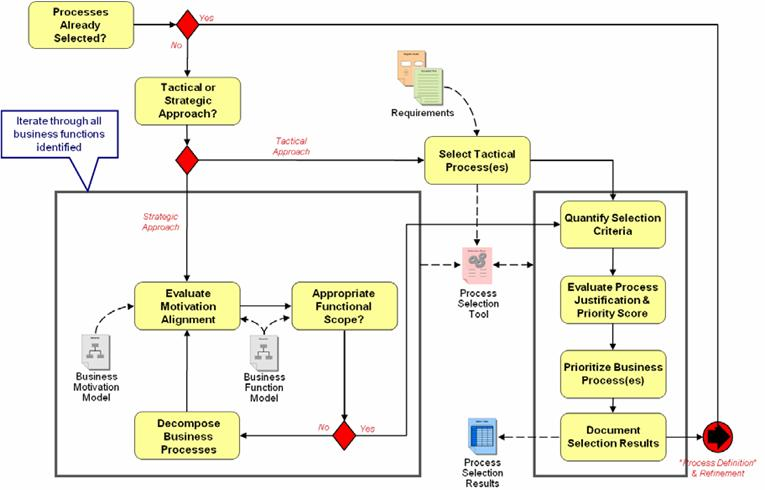
As shown in the figure above, process selection can be based on strategic or tactical objectives. These two approaches commonly arise from either strategy-driven (with executive sponsorship in a process-centric organization) or operational-driven (arising from a specific business problem) initiatives; or, alternatively, they may be distinguished by their scope, for example, enterprise versus departmental. Either approach feeds into a process of scoring and prioritization, which ultimately leads to process selection.
The strategic approach focuses on business process identification and selection using a variety of tools and techniques elaborated in the following sections. The tactical approach, on the other hand, assumes the business process automation candidates have been selected by some other means and only need to be justified and prioritized for business process automation projects.
The rest of this section, STRATEGIC ANALYSIS AND BUSINESS PROCESS SELECTION GUIDANCE, is divided following the figure above.
For the strategic approach:
And for the tactical approach:
Both approaches followed by:
When you have done the Process Identification and Selection, you will move forward into a further definition of the processes.
Process definition is the activity in which the details of the core business processes, identified earlier, are expanded in a business process model which later, during Implement, will become the executable model. The diagram in the figure below separates definition in order to look in more detail at each of the steps along with inputs and outputs. Again, note that what is visualized here does not show the OUM tasks that are used in this process:
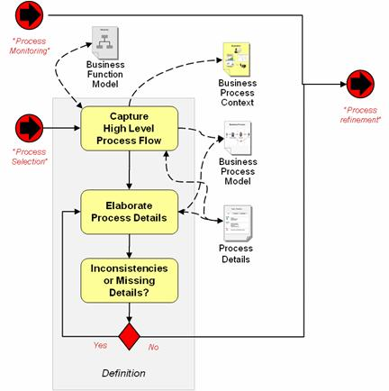
The key focus of Process Definition during Envision is to capture the high level process flow, which is split into the following sections:
Finally, there are two sections, where the first is related to process change identification, and the second to capture some technical specifications for the processes:
You will also find a section on process definition when you move into the Implement part for a BPM project, in the Process Discovery and Definition Guidance. The intention is that these should complement each other, for example, if the process has not been defined during Envision, then it has to be defined during Implement. If during Envision the process has been defined to a satisfactory level, then during Implement no effort will have to be spend on doing so. However, in practice most of the work regarding process definition is likely to be done at project level (Implement).
Evaluate Motivation Alignment is done iteratively for the identified processes, where you examine a particular business process at a time. This is executed as part of the task, ER.110 – Perform Benefit Analysis. However, when executing this task, you will have a look at the following, when they are available:
At the very start it is important to understand the rationale of the business for applying a BPM approach. The rationale may provide a good starting point for executing a motivation alignment evaluation for a business process. The rationale may include arguments related to how the business is organized, what the business goals are in general and in particular regarding applying BPM, and what the benefits are that the business expects to achieve from applying BPM, which all provide valuable input to a benefit analysis.
A BPM initiative soon starts to produce process models that may need to be captured in an enterprise repository. Determining the strategy regarding modeling and managing BPM related work products, should therefore be addressed early.
The Business Strategy should be an input when performing the benefit analysis (ER.110) for choosing a particular business process. This is because the business' strategy provides important input for determining the priorities regarding the business processes to focus on, and therefore may provide valuable input to the actual benefit analysis. Business drivers for BPM projects typically are one or more of the following:
Capture those aspects of the Business Strategy that help to determine the business drivers for using BPM.
Together with the Business Strategy, the Business Scope provides important input to identify and prioritize the BPM project portfolio, which is the ultimate goal of performing the benefit analysis (ER.110). For this, it is important to have a good understanding of to what parts of the business or to which organizational units the BPM approach is being applied. In case of larger organizations, there may be more than one BPM initiative going on, that may or may not be aligned with each other.
You should be aware of all BPM initiatives within the organization, in order to spot opportunities for synergy between those initiatives. After all, inconsistencies in solutions may jeopardize a proper, enterprise-wide application of BPM. Preventing this may require an increase of the business scope as originally defined.
The Enterprise Organization Structures are also an input when performing the benefit analysis (ER.110) to be used when choosing a particular business process.
For most organizations many business processes run across organizational units. It therefore is important to understand how the organization is structured, to know where processes cross borders of those organizational units, as this has a tendency to increase the complexity of BPM projects, and thereby may impact the benefit analysis, because of the amount of stakeholders to involve, and interests and existing solutions to take into consideration.
Preferably the first BPM project should be simple and not business critical, OUM also recommends to let the first BPM project involve as few organizational units as possible.
When a BPM maturity assessment recently has been executed for the organization, this provides useful input when performing the benefit analysis (ER.110) for a particular business process.
A BPM maturity assessment can greatly help in determining the right scope of the BPM initiative, keeping it pragmatic while at the same time addressing those aspects that have to be dealt with early. A BPM maturity assessment will show how ready the organization is for BPM, and will help in identifying those areas with room for improvement that should have the highest priority, and therefore should impact the benefit analysis.
As part of the maturity assessment useful information about the organization has already been collected and analyzed, and may therefore be reused, at least if the information is recent and still valid.
Strategic analysis provides the greatest benefits to selection by identifying processes that are most in alignment with business goals and objectives. Strategic process identification may be the result of adjacent efforts focused on business strategy planning, business architecture planning, or business process re-engineering, but in any form these assets enable a direct linkage to business value.
You should execute a benefit analysis for all the identified core process candidates in an iteratively way, i.e., you will examine a particular business process at a time. You will need the following prerequisites when executing this task:
Please review the above guidelines for how each of these prerequisites should be used.
When you perform the benefit analysis, you may discover that you need to provide more detail to the process in order to perform a proper benefit analysis. If this is the case, you decompose the business processes until you have provided a level with an appropriate functional scope.
When you start decomposing the business process, which is executed as part of the task, Create Enterprise or Function Process Model (BA.040,1), you should consider the following prerequisites:
The Enterprise Modeling Strategy should be an input when modeling a chosen Enterprise Business Process (BA.040.1). This shows how business processes and related artifacts are going to be modeled (that is, which modeling technique is used for what level and what type of model). You will also see how these models are going to be shared among all stakeholders. In OUM, this task is where you decide which kind of models or (more generically) viewpoints you want to use for BPM projects. Specifically for BPM projects, you should look for decisions regarding the following:
As explained in the Functional or Process Modeling technique overview, different levels of processes can be distinguished, typically presented as a pyramid of layers where the highest-level is at the top. The top-level processes are supposed to be generic (within a specific industry), whereas organization specific aspects start to appear in the lower-level processes.
When modeling, the top-level processes of the Enterprise Function or Process Model (BA.040.1) are not captured as process with roles and activities with a sequence flow between them. Instead, the processes are captured as “business functions” and expressed as hierarchy where (optionally) dependencies between business functions may have been indicated.
In the technique guide two different pyramids are presented, one with 5 and one with 6 layers (both starting with the number 0). On a general note, it is not too important which type of pyramid is used for any particular organization, but you have to decide upon exactly one.
When the enterprise is not yet standardized on an existing process classification framework (or taxonomy as it is called), consider starting with the open-standard Process Classification FrameworkSM (PCF)28, which provides a classification of 5 levels. At the highest level, the PCF recognizes cross-industry business activities that apply to every business. The example provided hereafter is based on the APQC PCF.
For modeling the higher-level processes OUM suggests using Value-Added Chain Diagramming, or VAD for short.
Rationale: Value-added Chain Diagramming is a widely used technique, and there are various examples as well as training available for that.
As explained in the technique guidance, for level 2 processes there is the option to use VAD, EPC or BPMN. In general a consistent modeling strategy should be applied, meaning that the choice of technique for a particular level has been decided up-front, and that all diagrams at the same level are modeled using the same technique. Deviations should only be allowed when done consciously and for a particular reason.
Rationale: modelers as well as reviewers easily get used to a specific way of modeling for a specific level. When available, also standards and guidelines will vary per modeling technique per level. An inconsistency in the way of modeling may result in people having difficulties with understanding the model or where it fits in the big picture, and potential issues with reviewing it.
According to the BPMN specification, an executable process is a process that has been modeled according to the semantics as specified for executable processes, which allow them to run on an engine. All other processes by definition are non-executable.
Now why would you model non-executable processes? The BPMN specification is limited to the explanation that non-executable processes are used for documentation purposes only. However, from a business value perspective there is much more to it, as by modeling non-executable processes the organization has the opportunity to identify process improvement options that are not necessarily achieved by automation. When you implement a sub-optimal business process, the likely result will be that the implemented process still only supports only a sub-optimal process, and the organization missed a good opportunity for improvement.
On the other hand one should not fall in the trap of over-analyzing and trying to model the “perfect” process up-front, as some optimizations are hard if not impossible to discover without having implemented and monitored the process first. As a rule of thumb you should not spend more than 2-3 iterations on modeling the non-executable process before deriving the executable version from it.
OUM recommends modeling the way the business operates, whether or not any form of automation is being used, as non-executable business processes first. In other words, if all the automated systems would be taken away, the process would still depict what the business does. For the use case modelers among us, non-executable business processes captured like this can be compared to business use case, like executable business processes can be compared to system use cases.
Rationale: forcing the modeler to abstract from specific systems, helps with keeping focus on the real business process, preventing to prematurely elaborate on implementation aspects at the wrong point in time.
A good reason to deviate from this guideline would be when abstracting from systems makes that the reviewers can no longer link the model to the day-to-day practice in which they happen to use the automated systems.
The following figure is an example of a non-executable process. It concerns processing a change request by a customer to change a bank account, optionally owned by more than one account holders. All accounts have an account number for a current account, and may have additional account numbers, for example for a savings account coupled to the current account.
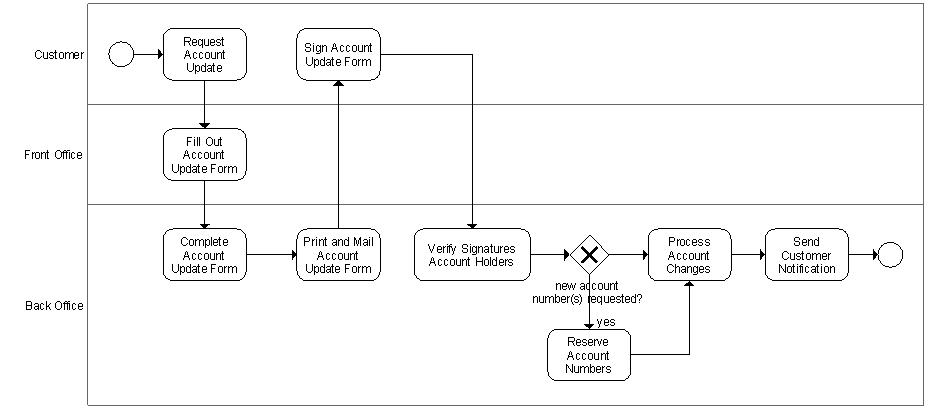
Now let’s assume that the previous figure documents how the organization currently works, and that this process has not yet been implemented. This makes the diagram above the (non-executable) process “as-is”. As will be explained when discussing the task, Identify Process Improvement Options (BA.090.2), the process “as-is” will be the starting point for defining the optimized process “to-be”.
In the context of a BPM project, developing use cases details for the activities to automate can have added value in the following cases:
A proper modeling strategy as a minimum should discuss all previous mentioned topics, that is, it should clearly indicate:
The Configured Enterprise Repository installed as part of Governance Implementation should also be an input when modeling a chosen Enterprise Business Process (BA.040.1). As with SOA services, governance of business processes is essential for any organization to maximize the return on investment in BPM project. To prevent overcomplicating things, OUM recommends letting BPM Governance be an integral part of an overall SOA Governance strategy.
Adding the BPM aspect has a tendency to increase the complexity, but also the importance of SOA Governance, given its nature of crossing organizational borders.
To properly execute SOA Governance for BPM, it therefore is important to have an Enterprise Repository that support identifying which processes fit where in a process hierarchy, concern which organizational units, uses what services, and so on.
The strategic analysis approach uses business function models in order to achieve the right level of granularity and to identify functional and process overlap and duplication. Both functional models and motivational models are invaluable to identifying process candidates. Please review the Functional or Process Modeling technique overview for information on this, and to see what the levels used in the functional or process model mean.
The strategic analysis of business process engineering focuses only on the functional and process levels 0 to level 2 (business functions, process groups and core business processes). The practitioner should therefore decompose until a set of core business processes has been identified.
When getting down to the requirements analysis (which is done later, during Implement), groups of requirements can be attached at level 2 and below. Requirements encountered at a parent node cascade through the hierarchy and implicitly apply at the child levels (and grandchild, etc.). This approach is especially useful for scoping or establishing a hierarchy of requirements ensuring complete coverage all the way down to the detail level. It is also a useful way to “broadcast” supplemental requirements rather than repeating them for every node at every child level. For the purposes of strategic analysis this approach can be used to document more granular requirements prior to breaking them down in to finer grained requirements.
Business Functions at level 0, also known as an enterprise process model, initially assist in framing discussions and to get an overview of the business functions across the enterprise or within the domain scoped for the BPM program.
A true business process model (as opposed to technical orchestration) is now recognizable as representing a Core Business Process. These business process models, also known as process maps at this level, identify the primary Business Activities at the highest level of the business process flow. Further analysis of the business process, which will happen in later phases of the engineering process, continue this decomposition into the lower levels of the process model.
The levels in the process model follow a broadly used approach, although there is no standard for leveling or naming. However, any variation on this theme should help facilitate consistent communications, as long as it is widely adopted across the enterprise. The function or process modeling is commonly used in business and IT for a number of different purposes, of which some examples are:
An alternative to the strategic approach to select business processes for business automation is using a tactical approach to process selection.
In the absence of strategic business inputs, such as top-level functional models and business motivation, it is still possible to document process selection criteria and to evaluate candidates without the assessment of Value Alignment.
A tactical approach is often taken when getting started with BPM to raise visibility and to gain senior management commitment for future project work. In the early stages of a BPM program is it fairly straightforward to identify core business processes and "low-hanging fruit" for process improvement. In such cases we focus on existing processes that are causing the organization the most pain, e.g. high cost, inefficient, taking too long to complete, inconsistent, low satisfaction, etc.
Business processes identified in this way can now proceed as process candidates to be used in the next step of process selection.
Here the process improvement options identified during BA.090.1 are prioritized.
At this stage (Select Tactical Processes), candidate projects are identified for the highest prioritized processes. For further guidance, please review the supplemental guidance for IP.040.2 below.
When you have selected a set of candidate core business processes, you will continue with quantifying the section criteria. You will do this both for a strategic and a tactical approach.
The success of any BPM approach is significantly influenced by choosing for realization the right processes at the right time. BPM projects tend to have a high visibility in the organization, and a successful project often results in an increase of requests for BPM projects. However, BPM generally is dependent on a solid infrastructure and effective governance, to be able to deliver on the expectations. Failing to provide such an infrastructure and lack of governance, will soon result in issues, expectations not being met, giving “BPM” a bad name, and in the end jeopardizing the BPM program. BPM is much more than adding “just an extra layer” to the architecture.
For organizations that had little to no exposure to BPM, and especially for those organizations that do not yet have such an infrastructure in place, it will prove to be key to start with a relatively simple process. This preferably is a process that will help the organization to define their BPM approach, while at the same time touching some of the key architectural aspects of that infrastructure.
Organizations that are more experienced (and would score higher in a BPM Customer Maturity Assessment), may identify candidate processes concerning organizational units that had no BPM exposure before, address architectural aspects not yet addressed, the (next) process that is expected to deliver the highest return on investment, improve an existing process, etc., and perhaps even in any combination.
The Identify Candidate Business Process activity is about identifying which processes are candidate for realization, assess the nature of each process and determine if it should be a candidate for the next project (or projects).
Added to aspects the organization may already use for determining the Project Portfolio, OUM recommends identifying at least the following:
Next you quantify the selection criteria used to identify the candidate processes which may become projects. Preferably, use some Business Process Selection Framework to select which potential business process should be realized through automation. Candidate process scoring is not used to decide if new process or functionality should be created, rather it is simply used to decide if the business process should be realized as an automated process. If a process candidate fails selection for automation that does not reflect on the value of the business process. Instead that merely indicates that the business process is not an appropriate candidate for employing BPM technologies.
Now that a number of processes have been identified they can be prioritize based on a scoring mechanism.
Next, you evaluate the process justification and priority scores to eventually determine the business processes to include as candidate projects.
Evaluate the suitability of business processes for automation, that is, having the greatest suitability for execution in a BPM system. You should prioritize the business processes as engineering projects. You should evaluate the business value alignment (in the case of strategic analysis) along with various other benefits expected from automation. You must also consider any inhibitors to automation and as a result in some cases a process may be determined unsuitable. For example if a process is too complex (high risk), or already well optimized and doesn't change, there may be no value in automating it.
The following tables contain parameters that may be used for evaluation of business process candidates. These benefit and inhibitor parameters may be used to prioritize the business processes.
Classifications for evaluation are provided where scoring is not simply applied on a range of high to low. Scores are assigned to these parameters and weightings can be applied as needed.
| Benefit Parameter | Description |
|---|---|
Value Alignment Score |
The Value Alignment Score weighs the alignment of the business process to the enterprise's business and BPM goals. This score is evaluated in the Process Value Alignment worksheet using inputs from strategic analysis. |
Process Category Score |
The Process Category Score weighs the process based on how the process contributes to the business. Evaluation of this score has the following options (high values indicate positively towards justification):
|
Strategic Process |
This signifies that the process represents the enterprise's strategic activities by ensuring that the enterprise meets its specified objectives. |
Supporting |
This signifies that the process represents the non-core activities that support the core and strategic activities. Support processes guide, control, plan, enable or provide resources for the core processes of an organization. Just because a process is a support process does not mean it should be worked on last. Core process problems are sometimes caused by ineffective support processes. Examples of support processes are:
|
Executive Interest Score |
The executive interest score weighs executive interest and support. A higher score value indicates positively towards justification. Proposed values include:
|
BPM Project Impact Score |
The BPM Project Impact Score weighs to what extent a project has been identified, justified, and scheduled for development. A higher score value indicates positively towards justification.
|
Business Impact Score |
The Business Impact Score weighs the impact automating the process would have on the bottom line of the business by either reducing costs or increasing revenue. |
Improvement Opportunity Score |
The improve opportunity score weighs the opportunity for improving the process once the process is managed and monitored. |
Response to Change Score |
The response to change score weighs the likelihood that the process will require modifications to meet changing business needs. |
The following table contains Inhibitors that have a negative impact towards process selection.
| Inhibitor Parameter | Description |
|---|---|
Lack of Structure Score |
The Lack of Structure Score weighs the lack of structure in the process. Sample categories for evaluation for this score are:
|
Complexity Score |
The Complexity Score weighs the scope and complexity of the process. The process should be small enough in scope and simple enough in complexity to be appropriate for this effort. |
Organization Impact Score |
The Organization Impact Score weighs the extent of reorganization and/or changed organizational policies required for this process. The authority to make these changes must be taken into consideration. |
Resources Involved Score |
The Resources Involved Score weighs to what extent are resources such as employees involved in the process. |
Integration Complexity Score |
The Integration Complexity Score weighs the complexity of integrating the applications necessary to support the process. |
Knowledge Gap Score |
The Knowledge Gap Score weighs the availability of knowledge about this process.
|
Business Impact Score |
The Business Impact Score weighs the impact automating the process would have on the bottom line of the business by either reducing costs or increasing revenue. |
Improvement Opportunity Score |
The improve opportunity score weighs the opportunity for improving the process once the process is managed and monitored. |
Response to Change Score |
The response to change score weighs the likelihood that the process will require modifications to meet changing business needs. |
See also Identify Candidate Projects (IP.040.2) for words of caution regarding starting simple for organizations with little to no exposure to BPM.
When prioritizing BPM projects, priority should typically go first to BPM projects that have a clear return on investment, while not being more complex than the organization can handle. Return on in investment therefore has to be clearly balanced with the BPM maturity of the organization.
In case of a Strategic Approach, balancing business value with risks, should score processes against aspects like complexity of the process, the compliance of service providers with the reference architecture, the BPM maturity of organization units involved, etc. From the candidate projects you ideally choose the simplest process that (in its category) has the least risks and will deliver the highest business value.
In case of a tactical approach, there probably will be a limited set of processes to choose from, if at all. But even then the processes should be scored. When the scoring shows that realizing a process has too many risks, it should seriously be considered not to start the project, and look for a better candidate instead.
Organizations that do not yet have SOA Governance implemented taking BPM specific aspects into consideration should scale up BPM projects carefully. This should go hand in hand with introducing or improving SOA/BPM Governance.
So, here you prioritize the business processes using the benefit and inhibitor parameters mentioned earlier to determine a decision base score for each process.
When you have determined the benefits and inhibitors to automation for the business processes, you can produce a numeric score (Decision Basis Score) that can be used to select and prioritize business processes for automation.
The list of parameters is a suggestion, but more parameters should be added or removed depending on the need for a specific customer.
An example of a graph visualizing the Decision Basis Score may look as the following figure:
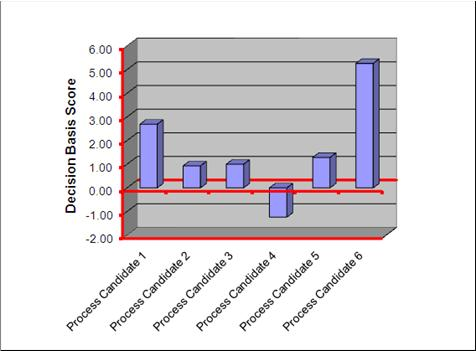
When you have prioritized the business processes, and through that determined the project candidates, you can develop an IT Portfolio Plan, where you determine which projects should be included.
Finally, at the end you will document the selection results. You would typically use the scoring information for the benefits and inhibitors, and the decision base score as a basis for the documentation. This to make a clear argument for why the projects have been prioritized the way they are.
Now you have completed the Process Identification and Selection, and move into Process Definition. This means that you start the activity in which the details of the core business processes, identified earlier, are expanded in a business process model which later, during Implement, will become the executable model.
The strategic approach for business process modeling as described in the first iteration of this task (BA.040.1) is applicable when the enterprise has planned for an enterprise-level, strategic approach to business process management.
Mind that applying a strategic approach does not exclude applying an opportunistic approach for specific processes in parallel. However when doing so, at some point in time also those specific processes should align with, and fit in the enterprise-level approach.
The key purpose of this task (BA.040) as defined in the task guidance, is to identify and model processes up to a level appropriate enough for prioritizing the implementation and/or improvement options of what BPMN calls executable processes.
What is an executable, or on the other hand, a non-executable process, or better would be to say, what is an executable process model? A non-executable process model is a model that contains only graphical information with the purpose to ease human-to-human communication, and thereby the model is not executable. On the other hand, we have the executable process models that contain both a graphical structure, as well as technical details to make a process executable. In an executable process, the graphical picture is the common language between the business analyst and the developer.
During BA.040 you will only be concerned with the non-executable processes, as typically the actual implementation or improvement of an executable process will be done in a specific project, which is covered by the Implement Focus Area. In the context of BA.040, the processes are therefore typically not modeled beyond level 2.
However, BA.040 is also the task where you would do detailed modeling of non-executable processes when that is required, for example to identify improvement options where you need more detailed information about the processes itself.
The following figure is an example of a non-executable process (which in this case you can tell from the fact that it contains pure manual tasks). It concerns processing a change request by a customer to change a bank account, optionally owned by more than one account holders. All accounts have an account number for a current account, and may have additional account numbers, for example for a savings account coupled to the current account.
Now let’s assume that the previous figure documents how the organization currently works, and that this process has not yet been implemented. This makes the diagram above the (non-executable) process "as-is." As will be explained when discussing the task, Identify Process Improvement Options (BA.090.2), the process “as-is” is the starting point for defining the optimized process “to-be."
Refer to Define Modeling Strategy for the Enterprise (ER.070) for determining what kind of modeling to use for creating an Enterprise Process Model.
The business process context diagram defined here is different from the Business Context Diagram (UML diagram) described in the OUM task guidance for BA.045:
The figure below shows a simple graphical representation of an example process context model.
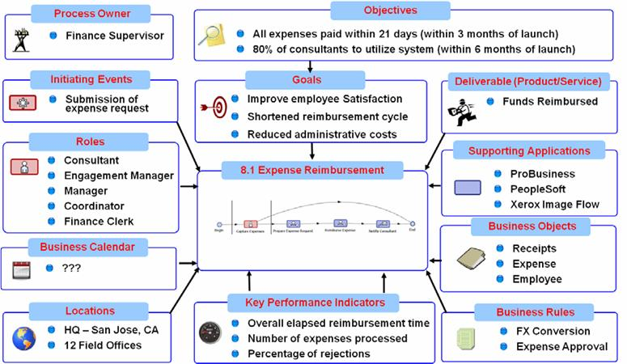
The process context model identifies the things we hope to capture as we elaborate the process details in the next step of the definition activity, and includes a summarized result from the following work products related to the given business process:
In the Business Process Context Model (BA.045), the goals have been transferred from the strategic analysis, but here they appear as "objectives" which are tangible statement of things that must be achieved to meet the goals. These will later support selection of KPI’s for measurement of process performance.
Capturing KPIs at this early stage of analysis is not commonly seen in a standard software development project. However, in BPM early definition of these metrics is vital for successful process performance measurement and ultimately feedback into the continuous improvement loop.
More detail on the KPI definition can be developed later in the process, during Determine KPI Collection and Reporting Strategy (RD.015), but it is important to capture these high-level statements from the business at this stage.
No specific guidance for BPM. Please review the guidance provided in the task overview.
The mapping of business functions to applications can be surprisingly complex. The figure below shows an example of a graphical representation of how to visualize applications to a functional model mapping. This form of diagram will make it easy to determine the application(s) involved in a process as well as where multiple applications happen to perform the same function.
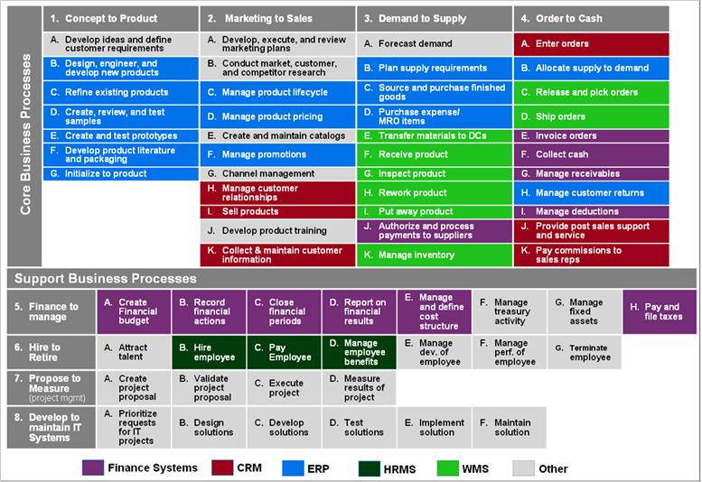
Another example, visualized in the diagram below, maps applications to the organizations that use them. This model might help ensure that applications that are used in the process are not forgotten during process modeling. Using this model, applications can be checked against the organization unit that uses them and determine if they play a role in the process.
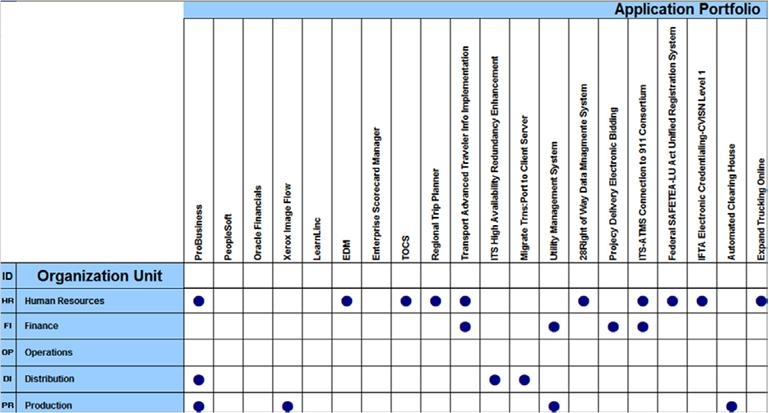
When identifying the Business Objects required during the Business Process Model, you should have a look at the following prerequisite:
The Information Architecture contains business objects identified in the overall enterprise, and will therefore be a useful input in identifying the business objects you will need to execute the business process under discussion.
Business objects are the pieces of information that flow between the activities in the business process model. Later, during Implement these will become the message flows in the technical representation of the model.
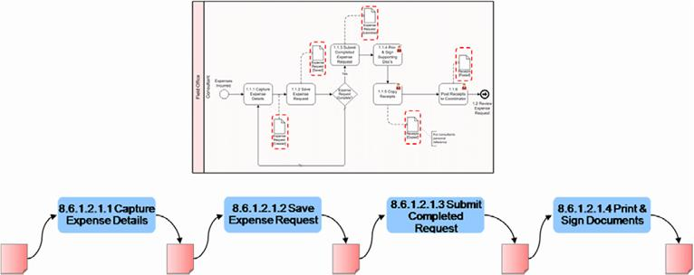
In the earlier example of the expense approval the initial focus was identification of the activities in the business process flow. The next step is to identify the business objects that are necessary to perform each activity and are passed between them as inputs and outputs. These business objects are shown in the lower portion of the diagram requiring details to be completed before moving to the next stage.
An important part of identifying business objects is a mapping of entities to applications. This helps to determine which systems are responsible for the information needed in our business process flow.
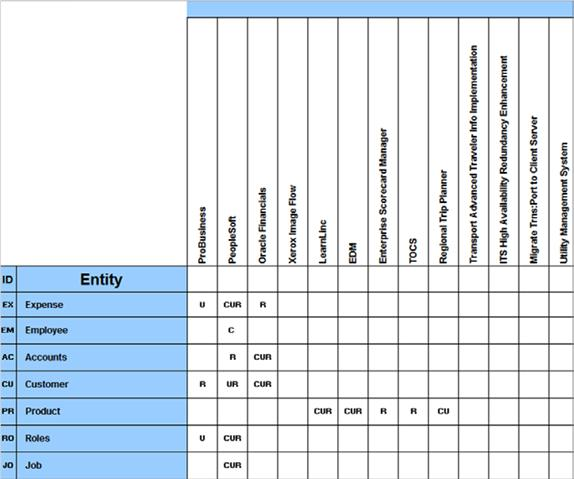
The figure above is an example of a “CRUD” (Create, Read, Update, Delete) matrix showing, not only which applications hold the information we need, but also some insight into their level of responsibility for the data, e.g. whether they update or merely read it.
Some business objects are easy to identify, having perhaps just one "system of record". When it is unique and stored in one place it's easy to produce a canonical data model. Unfortunately most core entities, such as customer, product, etc., are not so easily defined. Stored across a wide variety of applications, these business objects are more difficult to define. For this reason it is important to start to collect this information early during business analysis, asking the business user directly which systems he/she uses in each activity in the process flow. In this example we see multiple applications read and update product information.
Within OUM, the identification of process improvement options is done in the Enterprise Business Analysis process task, Identify Process Improvement Options (BA.090). This may concern processes that are not yet implemented, as well as already implemented processes.
When analyzing the process produced during the task, Create Enterprise or Function Model (BA.040.2), the organization may spot process improvement options from the documented “as-is” processes. For example an improvement could be to offer the option to the customer for filling out the Account Update Form themselves, thereby skipping the Front Office. This would result in a “to-be” process as in the following figure:
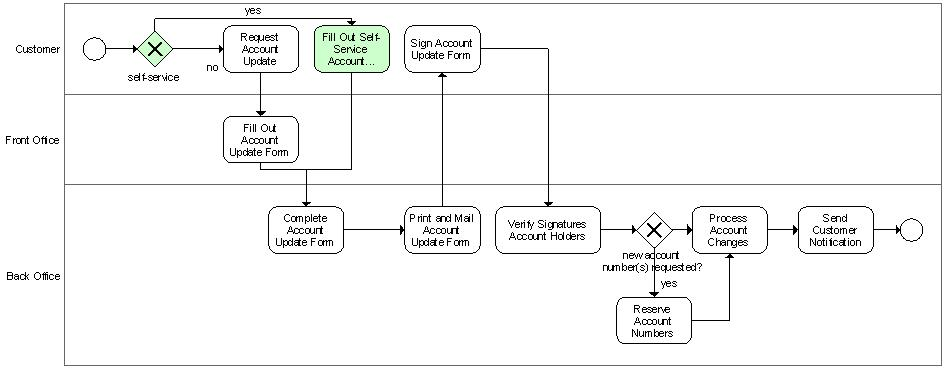
You may typically identify improvement options when you see the following:
If the issues highlighted are minor, they can be corrected and the model re-published. If there are major issues raised however, it may be necessary to re-convene another workshop session to correct them.
Once the documented business process has been agreed, a decision needs to be made on whether another level of detail is required. If this is the case then another round of interviews/workshops will need to be scheduled.
At this point, this still is a non-executable process, including a couple of steps that probably always will be manual, as you see in the example above where the step “Sign Account Update From” is a manual step executed by the Customer. The next step for optimization could be determining which steps of the process could be automated. The candidate steps have been indicated in the following picture:
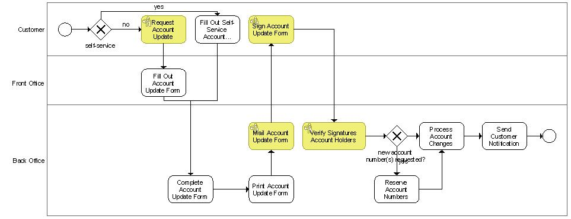
The yellow steps are pure manual tasks, and will not be supported by a system. The remaining, non-colored steps are the steps to automate. At this point it has not yet been determined how, and the steps to automate are therefore not yet further qualified.
Generally speaking, this will be the lowest level of detail you will model during execution of BA.040. However, as will be discussed later on, in practice it is likely that more improvement options will be discovered while modeling the executable process.
How the process improvement options are captured, depends on the nature and level of detail required to be able to implement those improvement options in the context of a project. When a process model is required, OUM recommends using the BPMN modeling language.
It may not be the case that you will capture any technical specifications during Envision, but there are cases where this would be beneficial. In practice many organizations may prefer doing this in the context of a project, which means that it will be done as part of Implement in OUM.
If however, you do capture some technical specifications for your business process, then you would need the following task as a prerequisite:
Please review the task guidance for EA.170 provided earlier in this document for details on what kind of information you could expect from this prerequisite.
Here we have moved into the Implement part of OUM, which means that we currently execute the tasks within the context of a BPM project.
During Process Discovery and Definition, the selected business processes are subjected to discovery, in which many participants collaborate to agree upon a model describing the next level of detail for the business process as it is in its current state (i.e., the "as-is" state). In practice you may not model the current state, but instead immediately start modeling the future process. This may be because there is no current process for example because the business is moving into a completely new business area, or with the purpose to prevent that the participants will not be able to think “outside the box” when the future process should be modeled.
The process analyst applies further detail to the business process model, elaborating the model and resolving inconsistencies.
This section also further defines the project that supports the engineering activity for the business process (or processes). Project definition includes initial sizing of the effort involved in the automation project.
Here the business process project transitions from identified to defined. In the defined state the major elements of the process have been captured. This includes the flow, its start and end events, business exception paths, the process participants and their interactions, the exchange of data between the process activities, and the interaction with external information sources and application functions.
Process definition is the activity in which the details of the core business processes, identified earlier, are expanded in a business process model which later will become the executable model. The diagram in the figure below separates definition in order to look in more detail at each of the steps along with inputs and outputs. Note that what is visualized here does not show the OUM tasks that are used in this process:
As you may remember, there is also a section on Process Definition in the Envision focus area, during “Strategic Analysis and Business Process Selection.". The intention is that these should complement each other. The key focus of Implement related to Process Definition is also to capture the high level process flow, but how much work that is, is dependent on the input available at Enterprise level.
If no process definition has been done earlier, then this must be executed in full during Implement, but limited to the process under discussion. If the process definition earlier has been completed to a satisfactory level for the process under discussion, then what remains for Implement is to verify what is available, provide potential updates or corrections, and to limit it to the process under discussion.
This Capture High-Level Process Flow part of the flow diagram also here includes the following sections:
The Elaborate Process Details include the following sections.
As with all IT projects, also BPM projects do not “fall out of the sky”. Instead every organization will have identified some business process to realize or improve, based upon business drivers that have been identified during some enterprise-level envisioning. This task is about identifying those business drivers, and detailing them in business and system objectives.
Therefore, executing this task typically starts with gathering and reviewing some Business Strategy (BA.010) and Business Scope (BA.012) and Process Improvement Options (BA.090.2), as well as the rationale for prioritizing the business process under discussion, as will have been captured in some IT Portfolio Plan (IP.060).
For scoping and putting the business process in the right context, also reviewing the Enterprise Process Model (BA.040.2) is important.
When defining the business and system objectives for the specific BPM project you should try to limit the scope to something that can be achieved in a limited amount of time (think in terms of months, rather than a year or more), while clearly adding business value.
In case of complex business processes that cannot be realized in a limited amount of time, consider defining several iterations, where the result of every individual iteration can be brought into production and instrumented from there on. A common approach to this is incrementally automating manual labor in the process, for example by replacing or supporting interactive activities by services calls.
Within the Implement focus area of OUM, the development of the current business process model is done during this task. Normally this task is only relevant in case of an opportunistic approach where the key process to realize concerns a process where there is no current business process model available, but where the future process has been identified to become an executable process, and therefore has been included in this project.
When doing this, we collect details about how the process actually works. To do this, we involve the people that actually perform the process. The process analyst is responsible for this.
To determine process (task-level) details and enhancements to the process model, you should:
A practical approach to capture the “as-is” business process is to hold a series of collaborative workshops where key stakeholders detail the business process. The information we collect can be logically divided into three categories:
For each step or task, gather the following type of information:
General task information:
The minimum that should be done during this task is to create the non-executable version of the process model, from which the executable would then be derived (during the task, Create Future Process Model (RD.011). The added value of creating this non-executable model is that it provides valuable information about the context of the executable process, which adds information to the System Context Diagram (RD.005), when available. It especially helps to determine what the events are that would trigger the executable process, and what the post-conditions should be when that process finishes, which in principle determines the scope of the process.
When the business takes a strategic approach to BPM, you may consider creating the higher level process models as well, but limit that to those models that concern the process(es) under discussion. At some point in time this will provide a clearer mapping from the executable process to the enterprise-level process model hierarchy, and may reduce the risk of overlap or gaps with other executable processes
OUM recommends capturing the non-executable process using the BPMN modeling language. This is because in this case there will be no modeling impedance mismatch between the models of the non-executable processes and those of the executable processes.
It is possible to use JDeveloper with the BPM 11g modeler. The BPM 11g supports the concept of Manual Tasks which are ignored by the execution engine, and can be used to model the non-executable steps in the process. The project used to model of the non-executable processes should be kept separate from projects with executable processes.
Here you identify the business rules, company polices or regulations that govern the execution of the tasks that are executed as part of the process.
Creating a System Context Diagram next to a business process model, adds value as unlike a business process model, the System Context Diagram can be used to depict the human actors, and systems that the process will interact with, and the key data that is exchanged between these actors and systems.
A System Context Diagram is also helpful to do an initial service identification and discovery, and should be verified against the candidate services for the project, as they may already have been captured in the Service Portfolio (BA.070).
For any organization to go beyond business process automation to business process management, it is imperative to measure to what level the process actually supports the overall business. In order to do so, the organization first needs to define a set of process performance metrics, also known as Key Performance Indicators or KPI’s for short. There might already have been defined KPI’s for the process earlier as part of the Metrics Collection and Reporting Strategy (BA.017). If so, these should be revisited.
Once the KPIs have been identified, the organization will be able to check to what extend these KPIs are being met in practice. For that the organization also needs to determine how to report on these KPIs to be able to analyze the performance of the process. Based on that analysis, the organization can then determine if the process can be improved.
Many KPIs can be collected from the automated processes, when the requirements of the analysis have been taken into account and realized.
Examples of KPI concerns for generic processes are:
Most generic KPIs can be realized using a generic approach, often supported by out-of-the-box functionality, and do not require specific measures to take. In many cases this kind of requirements can be addressed by specifying generic QoS attributes, and often capturing generic KPIs can be addressed in the overall Technical Architecture.
Specific process KPIs may concern the number of customer orders that are in a certain state, or the average time it takes for a specific department or even a specific person to successfully complete an activity. For these type of KPIs, process-specific requirements need to be specified. For example, to be able to determine the number of customer orders in a certain state, the customer order business object will need to have a state attribute that will hold the current order status. This kind of data is also called a “business indicator."
Reporting on the execution of automated business processes is generally done by means of so-called dashboards.
No specific guidance for BPM. Please review the guidance provided in the task overview.
During this task, the focus will be on identifying the applications required to support the process under discussion. Some of this may have been done earlier, during task, Identify Integration Requirements (EA.170.1). This should be revisited now that more detail is known.
Ideally, most of the candidate services already have been identified before the BPM project actually started, as part of the task, Identify Candidate Services (BA.070). In that case, this activity is limited to verifying the list of candidate services, and if necessary to update it based on updated business process requirements. If there is no existing list, then the first candidate services will be identified at this point of time.
In practice, identifying candidate services should not be done after determining the business process requirements but rather in parallel, using the business process requirement for identifying them. In principle you will revisit this task for each iteration where you determine or update the business process requirements.
You identify where the usage of services in the business process would be appropriate, but in the context of this task you do not determine if the services are actually available, and satisfy the specific requirements. Regarding the latter, you are referred to the task, Analyze Services (AN.080.1) where the Service Portfolio work product produced by this task (RA.025) is used.
In many cases, the development of SOA services takes a significant amount of time. To prevent the development of a business process getting frustrated due to required services not being available on time, you are recommended to identify the services that are candidate to support the business process as early as possible.
In principle there are four sources that can be used to identify services at four different stages of the project:
At this point of time, you probably already have the Current Process Model (RD.030) as input to identify an initial list of possible candidate services. When you have identified these candidate services, OUM recommends initiating a preliminary instantiation of the task, Analyze Services (AN.080.1) to produce a preliminary service contract and in that way to discover services that potentially may satisfy the requirements. This will not only help in locating possible services, but also in determining which party may be able to deliver them, offering the possibility to consult that party, find out what kind of policies apply, functional and technical restrictions that need to be taken into consideration, and so on.
For example, for some business process you may need to get a Customer Profile (an overview of all products some customer acquired from you company). In case of an organization with multiple products, you may find out that such a service does not yet exists and concerns an orchestration of services from multiple providers (systems) using different technologies. This may have a significant impact on the baseline of the BPM project.
Please review the next iteration of this task (RA.025.2) for details on how service candidates may be identified based on the other work products mentioned above.
Business objects are the pieces of information that flow between the activities in the business process model. Later, during technical design, these will become the message flows in the technical representation of the model.
So, the purpose here is to identify the business objects that are necessary to perform each activity and are passed between them as inputs and outputs.
Please review the earlier guidelines for the Enterprise Domain Model (BA.050) and the Information Architecture (EA.120). If something has been done that affects the enterprise level, then you need to revisit these tasks at this point in time for the process under discussion.
Here you start with the requirements definition of the future business process which concerns the creation of a new, executable process model and/or the modification of existing ones. At this point of time, you will plan the iterations on how to reach the new executable process model, and typically elaborate further on the process details of the current process model, to see what areas can be improved upon.
At this point, you should identify or verify the triggering events, and the business actors.
In case of a new process, the development of the Future Process Model typically is an iterative process by itself. OUM highly recommends doing this as a series of prototypes of a process that can be demonstrated and (when necessary) deployed and validated by key users during a prototyping workshop.
Using a prototyping approach will not only result in processes that will better support the requirements from the business, but will also reduce the need of time spent on creating formal specifications of the process. For example, you may consider skipping the specifications of use cases for the tasks in the process. However, even after prototyping, the creation of use cases after the fact can still add value, as will be discussed in the supplemental guidance for the task, Develop Use Case Details (RA.024.1).
As with almost any iterative development process, it is important to prevent the “90% done syndrome” where the organization keeps on coming with new requirements, resulting in deadlines and budgets never met. OUM therefore also recommended starting with a predefined iteration plan, where for each iteration it has been clearly defined to what level of detail the process should be modeled.
It is recommended that you start the iteration planning at this point of time, so that it is clear what is expected.
Experience also shows that at the beginning of every prototyping workshop it should be clearly explained to the audience what the specific scope of the current iteration is. They also should be made well aware that missing the opportunity to speak out may result in requirements identified later being handled as change requests.
How many iterations you need, depends on whether or not some version of the model already is available, as well as:
There is not just one generic iteration plan. However, the following (high-level) steps are recommended. Note that all the steps listed below do not belong to this task (RD.011), but rather belongs to task, Develop Conceptual Prototype (IM.010). These are the prototyping steps, and these steps are only relevant when the iteration of the models is done by means of prototypes.
| No. | Name | Description |
|---|---|---|
| 1 | Determine triggering events and business actors. | What are the events that kick-off the process, and in which way may this happen? Processes can be started in various ways, for example by means of a user that fills out some data as the first step of the process, or by means of call as a service from some external application or another process. Also combinations are possible. Determining the triggering events will confirm if the correct scope of the process has been determined. The business actors are those that respond directly to a business triggering event, or that have to perform an activity as part of the business process that is triggered by the event. |
| 2 | Model the main flow. | Model the steps that make up the “happy flow” of the process, where nothing goes wrong and the process successfully ends. When appropriate you may include some of the core alternate, and even business exception flows, but try to limit this to a minimum. |
| 3 | Prototype the main flow. | Perform an initial implementation of the process. Refer to the supplemental guidance for the task, Develop Conceptual Prototype (IM.005) below for further guidance. The implemented process should be demonstrated to the key users. Any feedback will be addressed together with the next two steps. |
| 4 | Model the alternate flows. | Determine and model alternate flows (deviations from the main flow, but that still concern a successful execution) for the process. When appropriate you may include some of the core business exception flows, but try to limit this to a minimum. When reviewing this with the key users, it is important that the likeliness is determined that an alternate flow may actually happen, which will provide input to the prioritization of the implementation of the process. |
| 5 | Prototype the alternate flows. | Perform an initial implementation of the changes to the process and demonstrate these to the key users. Any feedback will be addressed together with the next two steps. |
| 6 | Model the exception flows. | Determine the exception flows for the process (concerning situations where something went wrong, and the process cannot successfully end), and what needs to happen when an exception occurs. As with alternate flows, also for exception flows it is important to determine the likeliness of an exception flow happening, is determined. As explained in the Functional or Process Modeling technique overview, a distinction should be made between business exceptions and technical exceptions. In general, the handling business exceptions tend to be an integral part of the business process. Technical exceptions are not considered to be in scope of this task but in scope of the task, Analyze Behavior (AN.060.1) instead. |
| 7 | Prototype the business exception flows. | Perform an initial implementation of the changes to the process and demonstrate these to the key users. And feedback will be addressed together with the next two steps. |
| 8 | Capture and confirm all remaining requirements. |
As the table above already suggests, modeling alternate and business exception flows in practice will not always be limited to a specific iteration. When appropriate, you can model some of them earlier than the table suggests. However, to help people focusing on one thing at the time, OUM suggest you limit this to the minimum.
Rationale: Practice shows that users find it easy to come up will alternate ways to do things and especially in situations where things go wrong. Elaborating on that too early in the process will complicate the discussion and can easily result in the main flow not be captured properly.
By the time step 8 has been reached, in principle all requirements for the process should have been captured and analyzed up to a level that the actual design and implementation of the process can start, meaning:
A Use Case Model is used as an overview of or you may call it an index to use cases. As explained in From Business Process to Use Case with Oracle Unified Method, there is a relationship between interactive activities in a business process on one hand and (user goal) use cases on the other. In principle the lowest level of interactive activities in executable processes, have a 1:1 relationship with a (user goal) use case.
The Business Use Case Model (RA.015) should consist of a mapping of activities from the process to use cases. The use cases identified in the Use Case Model should have names that resemble the associated (main) activity as much as possible, in order for the reader to understand the relationship. In some cases naming the use cases will result in renaming activities in the process model.
As explained in From Business Process to Use Case with Oracle Unified Method, there is a relationship between interactive activities in a business process on one hand and (user goal) use cases on the other. In principle the lowest level of interactive activities in executable processes, have a 1:1 relationship with a (user goal) use case.
Even when the Future Process Model (RD.011.1) is developed by means of (couple of iterations of) prototyping, providing use case details may still make sense as input to testing and user documentation. To prevent unnecessary rework, OUM suggests waiting with developing the use case details until the prototype has been validated.
From a use case point of view, any automatic activity is done in the context of an interactive activity. As a rule of thumb, automatic activities should be considered to be within the context of the use case covering that interactive activity if:
An exception should be made for automatic activities considering a notification activity. In case of notifications it becomes somewhat arbitrary who the primary actor is, depending on how the goal of the use case is formulated (is it actor A who wants to notify actor B or is it actor B who wants to be notified?). In general it is a good practice to consider the notification activity as a separate use case, for which the goal could be formulated as “receive [abc] notification in order to by informed about [xyz]” (being a goal of the actor receiving the notification). This is consistent with the fact that when the notification would be done through an interactive activity, this activity would be in the lane of the role that is being notified.
To illustrate this in the example hereafter the red box depicts a Review Order use case with the Account Manager as primary actor, including both the Review Order activity, but also the Notify Customer activity. In contrast, the green box depicts a Receive Order Notification with the shipping clerk as primary actor, having the goal to be notified whenever something needs to be shipped (so that he can schedule his work, etc.).
There obviously is inconsistency in the rationale behind the choices made. It therefore would be better either to recognize a Review Order, and consider notifying the Customer or the Shipping Clerk as part of the goal of the account manager, or recognize a Notify Customer use case with the Customer as primary actor, having the goal to be notified whenever an order is not approved. Again, it is somewhat arbitrary but the latter choice seems to make more sense.
By the way, note that the Notify Warehouse activity is not in scope of the blue box depicting a Ship Goods use case, as receiving the notification and actually acting upon that normally do not happen in one single sitting.
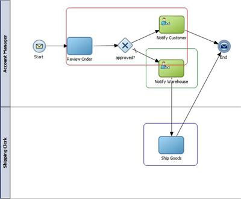
The next example (created using Oracle BPM Suite 10g) contains three interactive activities, and three automatic activities. As will be argued in the Functional or Process Modeling technique overview, generally, it is a bad practice to include an external actor like the customer in the same business process as internal actors (instead different pools should have been used). But for the sake of example, we will ignore that for now.
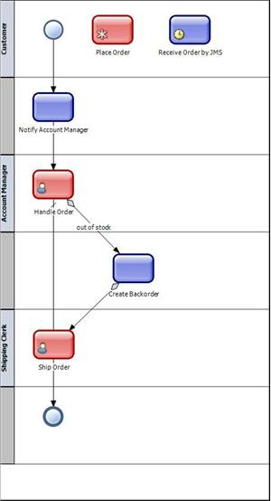
In this example, all interactive activities correspond with a use case with the same name as that activity. Place Order covers a use case where the customer keys in an order. Handle Order is executed by the Account Manager. The (automatic) Create Backorder activity is done as the result of the (interactive) Handle Order activity, and from a use case perspective covers an alternate flow of that use case. The (interactive) Ship Order use case covers where the Shipping Clerk keys in the information regarding the shipment of the order. For reasons just explained, the (automatic) Notify Account Manager covers a use case of its own where the account manager receives a notification.
The (global automatic) Receive Order by JMS automatic activity covers an alternate way to start the process, where the Customer does not key in an order, but for example sends an SMS which then results in the process being called as a service (via a JMS queue). In principle this is just another way to execute the same Place Order use case. From a use case model perspective you can consider the interactive and automatic to be both subtypes of the same (generalized) Place Order use case, where the (specific) sub use cases for example are named Place Order by Web, and Place Order by SMS.
The Use Case Model that corresponds with the business process looks as follows:
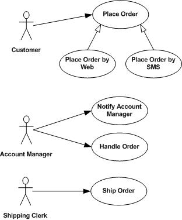
For developing use case details in the context of a BPM project, OUM recommends using a simplified format of the use case template, restricted to the following properties:
During the first instantiation of this task (RD.011.1), you developed an Iteration Plan on how to produce the process model.
At this point of time, you review the Current Process Model, and what you have done during the first instantiation of the task, with the purpose to identify and rectify problems and inconsistencies that arise in the detail definition of the business process. Examples of problems arising include the following:
At this moment, we identify the problems and inconsistencies, while in the following iterations of the task you will resolve these during Business Process Refinement below.
Business Process Refinement refers to the improved version of the business process, also known as the "to-be" state and this is where the process enters the cycle of continuous business process improvement. On entering the loop for the first time (from Process Discovery and Definition) changes should be kept to a level to strike a balance between the risk of over-ambitious change and demonstration of value through early wins. Subsequent iterations through the continuous improvement cycle bring greater intelligence about the business process and augmented simulation data from Monitoring and Analysis. New or changed business drivers may also be introduced during Business Process Refinement to accommodate changes in the business environment.
During Business Process Refinement, the process model is enhanced with details of business rules, business requirements, and underlying application and information services that are expected to support the business process model.
The original "as-is" process capture was performed in the definition portion of the engineering cycle. This included high-level capture, elaboration (task-detail capture), and rectification of inconsistencies. The next step is refinement, in which we consider improvements and the "to-be" business process that we will eventually pass into analysis and design.
The diagram below shows what is included in the refinement process. Note that what is visualized here does not show the OUM tasks that are used in this process:
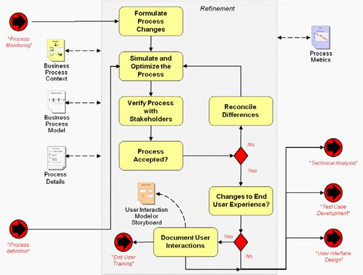
The rest of this Business Process Refinement Guidance section is organized as follows:
Remember that this is done using an iterative approach, and how you start or continue with a specific iteration of business process refinement, depends on what you have done so far, which is typically one of the following:
If you have started with the current process, this initial capture of "what the business does today" is normally done only once prior to the first automation. In the refinement procedure the "to-be" business process model includes incremental improvements to be carried forward into the first and all subsequent iterations of the continuous improvement cycle. In subsequent cycles, process activity metrics from real-world operation of the process should be available to help with refinement. At the completion of either definition and/or refinement, technical concerns such as technical analysis, test case development, and UI design are addressed in the next major activity.
To be able to simulate the process, you will need to have the process modeled using BPMN, and in a tool that allows for simulation.
In case of an existing process that is to be improved, you may start using that model with its (known) metrics for simulation. In case of a new process to automate, first you must have reached a certain level of detail that can be simulated, and for which it provides value to be simulated. That model is not necessarily the executable one, and it can be that you use the current one as a starting point. If the model you start with has not reached such a level, you will need to do a first iteration (possibly with prototyping), before you have a process model to simulate.
In any case, the future process will be developed and refined through a number of iterations. Four sessions with the stakeholders is a nominal amount. For a new process, where there is no existing model, it could look as follows:
When starting with this instantiation of the task, you determine the improvements to be made in the initial to-be process and in subsequent iterations of that process, as part of a continuous improvement cycle.
Process model changes may be influenced by many factors including:
Here you will start to produce the executable process that will be the basis for the process prototypes. Also, this process model will form the basis for the process to simulate in the following task, Simulate Business Process (RA.010).
Simulation models are supported by the BPM engineering tool and should be maintained alongside the model itself, potentially taking metrics from the runtime system to improve the realism of the model.
Initially, parameters are defined to attempt to represent the real-world environment for the process. For human tasks this includes worker availability, everything from the business calendar to the actual expected throughput time for the task, including all required preparations. Similar parameters can be defined for systems. With this information assembled, simulation models can be defined for which the tool can execute various scenarios to calculate limits, such as maximum throughput, identify bottlenecks, and estimate exception rates. All of this can be used to improve the flow and predict the process performance and necessary resource capacities in the runtime BPM environment.
With these details in the simulation model, obvious process improvements can be identified, such as:
When you prepare your models for simulation, you may need to detail the future process model further, or discover areas that preferably should be modeled differently.
As a result of the Business Process Simulation, you may discover areas of the use case details that should be different, or areas that need more detail.
Below are some guidelines on how to plan for and set the correct expectations ahead of the review session(s).
OUM considers validation of a functional prototype to be one of, if not the most important ways to capture and validate business process requirements. The best way to validate a conceptual prototype is by means of a facilitated workshop.
Any session for validating a prototype therefore should be carefully prepared. As a minimum the following should be done:
If possible, plan for the business sponsor and project manager to be present. Discuss their role during the session up-front. Unless the business sponsor is also is a key user, he/she typically only takes a role as observer, and only participates to take a decision when the group is indecisive. The project manager typically takes the role as facilitator, or observer.
When possible, have a scribe present during the validation session that captures the essential points of the discussion.
It is risky to assume that the participants have the correct assumption about the scope and purpose of the iteration at hand. Before the demonstration this therefore has to be emphasized clearly.
In many cases at the beginning of the BPM project an iteration plan will have been created that identifies a fixed set of iterations with some (high-level) purpose and scope. If so, it is imperative to make the key users aware of this, and clearly point out that this validation session is the one and only opportunity to state any new requirement or progressive insight regarding demonstrated requirements, to limit the risk that the requirement have to be treated as a change request when it is uncovered too late (which either will increase the scope of the current BPM project, or will be postponed to some next project).
But even when no such a fixed iteration plan has been defined, you are strongly suggested to stick to the agreed scope and purpose of the iteration at hand, and firmly agree the scope and purpose of the next iteration to secure converging of requirements, resulting in some version of business process that is fit for purpose, and starts providing some return on investment. When necessary, re-emphasize the meaning of “management” in BPM, and refer to the monitoring and improvement aspects implied by that.
It might be tempting to start changing the business process model on the fly. But be aware that this may break the prototype, and sometimes is hard to follow for the participants. Consider discussing changes of the model using a whiteboard instead.
When you have completed the prototype validation session(s), it is likely that this will require some changes or additions to the future process model.
An important part of the executable process, are the end user interactions to the process. It is also recommended to prototype this part of the process.
Storyboards can be used for quick and simple illustrations; otherwise, for more detailed definitions screen mock-ups are used. This is the domain of more traditional software development, and will therefore not be so different. But it is important to understand that the interface to the process participants is vital to the success of the BPM implementation.
Ideally these user interactions won't require entirely new interfaces, but this would require a deep integration with the existing applications that are providing the application services.
Please review the guidance for validation of the prototype in the task, Validate Conceptual Prototype (RA.030) above.
Developing a Functional Prototype is taking the prototype a step further than the Conceptual Prototype. The prototype should be created as part of an iteration in combination with the task, Develop Future Process Model, and at this moment primarily focuses on the user interaction of prototypes related to the new, executable process models and/or the modification of existing ones.
When creating a Functional Prototype, this should be restricted to the bare minimum necessary to provide a sufficient level of input to the (key) users for them to be able to review the process properly, and facilitate:
The prime focus will be on the correct order of and roles for the activities, for each activity the data that needs to be shown or keyed in at every step, and the business rules that may apply.
Minimal effort is put in the actual implementation and no effort should be spend on cosmetic aspects. For example, when the tool supports screen generation, you should stick to the generated screens as much as possible. Activities concerning integration or business rules preferable are stubbed by means of scripting tasks (i.e. the result of a service call or business rule is hard-coded in the process, instead of being provided by an actual service or business rule).
Please review the guidance for validation of the prototype in the task, Validate Conceptual Prototype (RA.085) above.
When the Functional Prototype has been validated, the results should be included in the related use cases.
Technical Analysis and Business Process Design includes a feasibility analysis to ensure that the IT applications and systems are capable of supporting the automation as it is currently defined. A gap analysis is performed to specify requirements for extensions to existing IT capabilities needed to support the to-be business process model. Approved IT changes initiate software and service engineering projects separate from the business process engineering project. The business process design describes the details of interfaces and the messages that flow between them, transactions and transaction boundaries, security constraints, and exception paths for system error events. On completion of this IT focused activity the business process is considered to be in the designed state.
Technical analysis involves capturing the technical specifications for the process, determining what functionality needs to be built, and creating specifications for additional IT application functions. It is up to the organization to determine how the missing pieces will be developed. Options include service engineering, standard software engineering, or ad hoc development.
The process for technical analysis and design is shown in the following diagram. Note that what is visualized here does not show the OUM tasks that are used in this process, which mainly are tasks from the Analysis process:
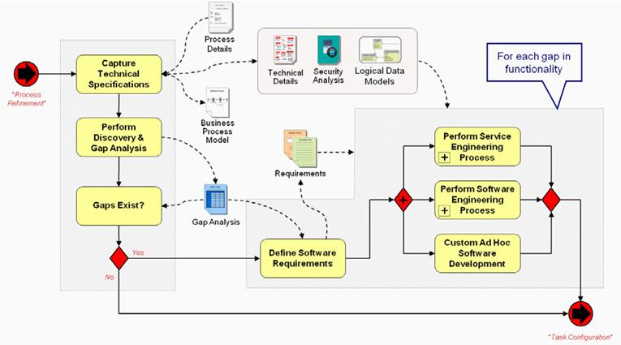
Technical analysis and design is the first step towards making the model executable (what Bruce Silver refers to as "level 3"). We start with the process definition from process refinement (the "to-be" model) and collect additional technical details to support the analysis you perform at this point of time. The gap analysis shown here is very different from any gap analysis that may have been performed as part of the business analysis: here we are assessing the ability of the IT applications and systems to support our business process.
Supporting software engineering activities follow to ensure that you have all the necessary IT assets you need to make the business process execution when you move into Business Process Application Composition.
The rest of this section includes guidelines for the following:
At this point of time, you have a simulated process model, and now you will add details to the process model to finally make the model executable. This is typically done by the Process Architect, with support as needed from the Enterprise Architect, Data Architects, and Security Architect. Currently in OUM, there is no task that fully covers this, but some guidelines are provided below:
You will do the following:
At the end, you will have produced the following:
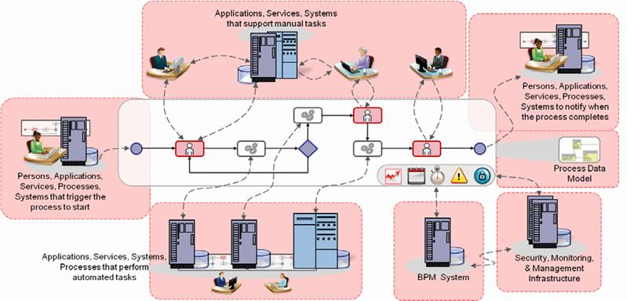
To capture the technical specifications, you should have a look at the different aspects of the process itself. This includes:
The figure above shows a technical view that can be used to represent the technical considerations for the process. The process model itself appears in the center of the diagram while all the external systems and human actors it touches are highlighted and linked to the process model.
A business process flow must always be started by a start event (shown far left of the diagram). This can include human initiators as well as any number of system interactions, from receiving a fax to a complex event analysis system detecting some significant condition. The BPM system itself (bottom right) might also start a process based on timer for example.
At the top of the diagram we have the people the process is interacting with. Three types of interaction are represented here:
Regardless of the type of interaction, there are many details to capture such as:
The backend systems (represented in the lower left of the diagram) are integrated with service tasks ideally using SOA techniques, but potentially also using legacy integration architectures (EAI/MoM, point-to-point, or custom integration). These backend systems commonly have their own, departmental level, workflows and technical processes. In many cases it is not necessary (or technically feasible) to decompose these business activities and take control of the flows in the core business process model. This will be a area for discussion of feasibility and requirements between the business and IT.
The BPM system itself is also capable of injecting events into the flow, such as alarms or detection of certain conditions. It also collects performance information about the running processes and may even perform real-time analysis triggering certain events or notifications.
When you capture the technical specifications for the business process, one part of it is to analyze the data that in some way is related to the business process.
In the context of a business process this concerns the analysis of the data that flows through the process, as well as the data that will be exchanged with external “components” like other processes or services.
In principle, AN.050 may have multiple instantiations during a project, while not included in the view at that point of time, the first instantiation could be in the context of developing a functional prototype, and the second one when analyzing and designing the process, where the latter is the case at this moment of time.
An instantiation during prototyping can be particularly useful when using XML-based input and output messages, and in case of more complex business objects. Creating a conceptual data model will greatly support the development of well-defined XSD’s, business objects (Oracle BPM Suite 10g) or Data Objects (Oracle BPM Suite 11g).
Analyzing data at this stage of the BPM project is in particular important for activities that concern service calls. The analysis of the data that needs to be exchanged between the business process and services will provide input to identifying and discovering those services. As explained before, the sooner this is done, the better it is to allow the services to be developed in time to be integrated with the process later on.
OUM recommends using UML class diagramming technique to analyze the data structures used in the process. Mapping a UML class model to XSD’s is relatively straightforward, even when some “denormalization” is required.
Here you will analyze the behavior of the conceptual components to be realized. This concerns supporting the requirements found when creating the Future Process Model (RD.011.5) and the Use Case Details (RA.024.3).
In the context of a business process, this concerns the analysis of what has to happen within the activities in order to determine what type of components need to be realized. Among other things, these components can concern services to call, user interface components to create, or business rules to implement.
A specific topic to address is the handling of technical errors (i.e. not the business exceptions that may have been identified). Consider using a generic exception handling framework for system exceptions.
In the context of a BPM project, this tasks concerns business rules for which it has been determined that applying a rule engine is appropriate.
Although you are advised to spent little to no time on implementing business rules while prototyping, analyzing them during the prototyping stage is important to determine the nature of the business rules relevant for the business process in order to asses if using a rule engine would be appropriate. Depending on the tools used and skills available, using a rule engine may have a significant impact on the baseline of the BPM project.
In practice, this task will be executed several times during the BPM project, as soon as new candidate services have been identified. It is important to identify new, or existing services that require a change as soon as possible, to allow services providers external to the project to start planning their work in time.
Ideally, these services are ready to be integrated in the business process no later than when the system test for the business process has completed. Whenever it becomes clear that some service will not be ready in time, the BPM project will have to adjust its plan. Rather than postponing the production date of the process (and with that postpone the return on investment), some work-around is realized that allows the BPM project to finish on time nevertheless, and postpone integration with that service to some next version.
For services that are supposed to be synchronous, it needs to be determined if that is feasible. If not, the business process model requires a change to handle an asynchronous call, which sometimes can have a significant impact on the model. Think for example about an assumed synchronous service call within an interactive activity, which turns out not to be feasible. If that is the case, a way has to be found to execute the service up-front, but that may not always be appropriate, for example when it is required that the data used in the interactive activity is up-to-date.
Also the data that is expected to be exchanged with the service needs to be validated. If there is no single service that can provide what is needed, it may be necessary to call more than one service, or to create a composite service to support the business process requirements.
No specific guidance for BPM. Please review the guidance provided in the task overview.
One of the problems encountered in business process automation lies in bestowing the authority to initiate the application functions on the BPM system. This authority must be maintained and propagated securely to the applications where credentials are commonly not uniform between systems or, even worse, the authenticating mechanisms may be different. Use these steps to determine the scope of the security issues and formulate appropriate solutions.
Identity and Access Control:
Integrity and Confidentiality:
Finally, review the security specifications with a Security Architect. Originally the “swivel-chair business process” involved a human participant that had to login to multiple backend application systems (It is often referred to as “swivel chair integration” where an end user has to manually copy information from one system to another).
To provide equivalent access to the BPM system a number of solutions are available. The simplest solution is a centralized “single sign-on” system that authenticates the BPM system to all backend applications. However, it is sometimes necessary to provide access based on the status of the human initiators and participants and this may even influence the flow of the process. In these cases it is necessary to propagate the participants’ credentials or security tokens.
Confidentiality can often be delegated to a content management system (CMS), but again it is necessary to appropriately identify the user involved in the activity to enable the CMS to provide the right amount of information.
This is the second instantiation of this task. At this point, we have a lot more information available to revisit the candidate list produced earlier during RA.025.1.
As mentioned earlier, in many cases the development of SOA services takes a significant amount of time. To prevent the development of a business process getting frustrated due to required services not being available on time, you are recommended to identify the services that are candidate to support the business process as early as possible. You started this identification already during RA.025.1.
In principle there are four sources that can be used to identify services at four different stages of the project:
When executing RA.025.1, you may have had the Current Process Model (RD.030) as an input. Currently, you will also have the Future Process Model (RD.011) available, which would be the second source for identifying candidate services. Some of the activities in the model may be completely supported by a service (i.e., without manual intervention).
For example, the Reserve Account Numbers activity in the business process snippet below, may be a good service candidate when you know there is a service enabled system in the Application Portfolio that offers this functionality.
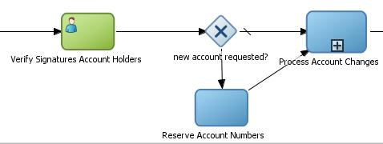
If the chosen Modeling Strategy includes the creation of use cases, then the Use Case Details (RA.024.3) may be a third source, where steps of an otherwise manual task may be identified that can be supported by a service. For example, you may identify an Update Account System service candidate from the Use Case Details (RA.024). This would happen when detailing the Process Account Changes activity as a use case, which would include (in the right hand column) a step that reads “the system responds by updating the Account System."
Alternatively, you may have identified this service during some next iteration of the Future Process Model (RD.011.5) when you start detailing the Process Account Changes activity as a sub-process, as shown below.
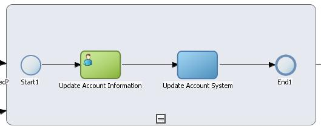
Another source of identified services is the AN.060 – Analyze Behavior Analysis (AN.060.1). While executing this task, for example common “utility” type of behavior may be identified that can best be supported by a reusable service.
Here you should finalize the result of the previous instantiation of this task (AN.050.1), and/or creating an optimized model of the actual data structure that was created. Depending on the requirements regarding documentation, this will then be the time to create or finalize the documentation of this model.
If you have not performed any data analysis earlier, then you will at this point of time create the class models needed to properly support the design of data objects as they will be handled by the business processes, and exchanged with its service providers.
As has been explained while discussing AN.050.1, OUM suggests to use UML class modeling for this.
A distinction can be made between process and non-process data. Process data concerns data that the (running) business process itself needs to be aware of, for example because it needs to act upon it (like making a decision in the flow), or because it needs to pass data from one activity to another. All other data is considered to be non-process data. In general you should try to keep the process instance size as small as possible, and limit the data that kept by the process in memory to process data. The Data Analysis can provide valuable input to the task, Design Data (DS.090).
As an aid to determine and analyze the data required for the process, you should ask yourself the following for each interaction in the process:
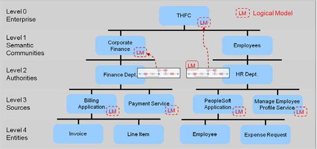
The above figure shows an example of the logical data models that may be associated at the various different functional levels of the enterprise. Each data source inherently has its own logical model. In some cases a higher level model has been defined, perhaps via MDM or data integration efforts. If such a model exists, then processes within the scope of that model should use it. If no higher level models exist, then a logical model should be defined for the process. This is preferred over adopting the source model in that it avoids propagating the source model beyond its intended scope. You need to determine which models should be used when.
In the figure each of the logical models shown belongs to an application. In a business process that typically spans applications it is important to be aware of data dependencies that span applications since this demands specialized data services that may not already exist. Some organizations have an enterprise-wide canonical data model (shown at the top of the model). The enterprise data model is rare, but if available it should be used as much as possible in defining data needs for the process. In the case that data models are not already defined it is often better to start with an industry standard model (for example, HR-XML for HR systems, HL7 for health care, etc.) rather than an application specific data model.
Oracle’s Application Integration Architecture (AIA) for example defines canonical models, independent of the applications, but with translations and transformations for interaction with the applications.
For each of the levels of the logical model, our technical solution may need data transformation services to exchange data with the applications.
Please review the task guidance for TA.090.1 provided earlier in this document.
The gap analysis is also known as a "technical feasibility" study since the supporting services, information needs, or application integration may not be available and the cost or delay to develop them may not be feasible for the project. Therefore, you will either need to take a step back and rework the business process in a next iteration to find alternative solutions, or you will need to change or delay the project
At this point of time, you will do a discovery and gap analysis. You need to figure out what functions need to be built or accessed to support each task in the business process model versus what currently exists. If you are implementing BPM over a SOA foundation it should be relatively simple to line-up the functional models used for service engineering along with service contract descriptions to determine where services meet the requirements of the business process tasks. SOA Service discovery methods include repository search, examination of Functional Model, and examination of service contracts. Other forms of application functions can be found in Application Functionality Matrix and a Data Entity Matrix.
The process architect typically has to do the following:
What does the process require that needs to be developed?
For each gap identified in the technical application and information support we define software requirements and perform the necessary software engineering activities to fill these gaps, which typically are realized in projects outside the scope of the current BPM project. Here, we do NOT define how these other engineering activities should be performed: they may for example be fulfilled through SOA Service Engineering Planning engagement.
The gap analysis is also known as a "technical feasibility" study since the supporting services, information needs, or application integration may not be available and the cost or delay to develop them may not be feasible for the project. Therefore, you will either need to take a step back and rework the business process in a next iteration to find alternative solutions, or you will need to change or delay the project
For the identified gaps, or the functions that need to be built, or accessed to support each task in the business process model, you will need to further analyze the data required for these, and determine whether the data has been defined properly, or that you need to add or change the details. It is important to understand exactly what kind of data is required by for a process step, and what data will flow to and from a step to enable a proper execution of the process itself, and the individual process steps themselves. Please also review the supplemental guidance for the previous instantiation of this task (AN.050.2).
Custom logic concerning operations on classes is best captured as you normally would capture operations for classes, in line with the technique you have chosen earlier.
For the identified gaps, or rather the functions that need to be built or accessed to support each task in the business process model you would need to do a further analysis.
Many conceptual components will already have been identified as a side effect when you determined the business process requirements, as most of them will correspond 1:1 with one single activity in the process model. However, this will not always be the case, especially not for (complex) interactive active activities requiring a screen flow.
Therefore, during this instantiation of the Analyze Behavior task, each activity of the process model should be reviewed to determine if the appropriate components have been identified, or that more have to be added to the analysis model. The extent to which these components are formally captured, depends on the requirements regarding documentation.
An important aspect to analyze is the nature of custom logic to create. Some custom logic is best supported by means of operations that can be defined on classes used by the process. Examples are:
Other custom logic may require a dedicated class that can be reused in other processes as well. An example would be an eleven-proof for bank account numbers. Custom logic should be assigned to the appropriate classes in exactly the same way as you normally would do during an OO-type of analysis.
In case of reusable logic, consider if this should be supported by a service or better is positioned in a reusable class in a shared library. Using a service typically requires significant overhead on one hand, but on the other has the advantage of being reusable outside the context of business processes.
In case of a service, during this Analyzing Behavior task you capture the requirements regarding what the service needs to do and what the response should be. Unless it is already clear which service needs to be used, this provides input to the task, Identify Candidate Service (RA.025.2) task. At this point of time it is yet to be determined if a service can be discovered that would satisfy the requirements (which will happen during the task, Analyze Services (AN.080.2).
Some decision points in a process model can be captured using a gateway that makes the decision based on the outcome of preceding tasks, for example by checking a status attribute of an object. In other cases more advanced logic may be necessary, which may require a formal specification of a business rule.
There are also other types of requirements that can be captured as a business rule, for example logic to automatically change values of the attributes of objects. An example could be a change of the status of a customer from “Silver” to “Gold” due to some company policies.
In case of a requirement that is captured as a business rule, it should also be determined if that logic is appropriate to be supported by a rule engine. This will typically be the case where the rule may be subject to change over time due to changing business requirements. Using a rule engine involves an extra component in the execution of the process, for which it should be carefully considered if this does not result in too much overhead. Determining the nature of the decision therefore provides important input to the design of the process. For further supplemental guidance refer to the task, Analyze Business Rules (AN.070.2).
Some requirements require custom UI-logic that cannot be automatically generated.
Here you analyze the business rules that have been identified when determining the business requirements, or during the analysis of the requirements. Every business rule should be properly classified so that is clear what component in the architecture should be used to implement it will be implemented.
Here you will define the services from task, Identify Candidate Services(BA.070), and task, Identify Candidate Services (RA.025) that have been identified as candidate services and that during task, Analyze Services (AN.080.2) turned out to be new or existing services that require a change.
Here we assume that the actual design and implementation of these services is done in the context of one or more SOA projects which are executed in parallel of the BPM project. But even when these services are supposed to be created in the context of the BPM project, it makes sense to treat this as a “separate” project within the BPM project. For supplemental guidance regarding the design and implementation of these services, you are referred to the SOA Project Delivery view and SOA Project Delivery Supplemental Guide.
The key of this task (AN.085), in the context of the BPM Project, is to identify the service contract needed by the process. This contract needs to be validated, and agreed upon by the service provider.
Defining the service contract may result in identifying a gap between the requirements of the business process and what the service provider can offer. That in its turn may result in new services being identified, etc., which makes this task feed back into task, Analyze Services (AN.080.2).
No specific guidance for BPM. Please review the guidance provided in the task overview.
The preferred approach to “filling the IT gaps” is SOA Service engineering because it lends itself to optimal integration with the BPM method. SOA Service engineering capabilities even appears in the maturity model used in the assessment of a BPM maturity.
In reality SOA may not be used, or it may not be sufficiently matured in an organization, so other legacy strategies, such as EAI, may need to be used. The last resort is ad hoc development. This never results in a long-term sustainable solution and should be avoided.
Service Engineering Option: All needed functionality is fed into a service engineering process where proper service justification, classification, development, testing, and provisioning are performed.
Software Engineering Option: Formal software development process, used either when service- enablement is not justified, or when the service engineering option does not exist.
Ad Hoc Development Option: Software is developed by the process team strictly to satisfy requirements of the process.
The resulting software may include:
During Business Process Application Composition, the technical steps necessary to make the business process model executable are completed. Implementation of the technical aspects of the business process include configuring business rules, Human Task definitions, and wiring Service Component Architecture (SCA) components to support integration and service orchestration requirements; User Interface (UI) applications may also be constructed. In this activity the business process advances its state from designed to composed.
The goal of BPM in any IT environment should be to get to the point where business processes can be composed (and re-composed) by the process developer without the need for the intermediate step of software engineering. SOA will certainly help in realizing this goal, but the current reality is that many business process model tasks will initially require some additional IT intervention, or may even pass basic feasibility tests.
Ultimately this activity should be sufficiently non-technical that we at least move toward the utopian state described in the Third Wave of BPM (i.e. to enable companies and workers to create or change business processes on the fly), and start to eliminate IT involvement in business process engineering altogether. In any case task, configuration is the final technical step needed to make the business process executable.
Task configuration is a graphical and declarative activity (i.e., no procedural programming) for wiring services to tasks, specifying the attribute level details of the message flows and data mapping between tasks, KPIs, etc.
The process developer configures the process in accordance with the technical specifications defined by the process architect.
Configuration may include:
This eventually leads to a configured process, which is ready for testing.
These activities are represented in the process model below. Note that what is visualized here does not show the OUM tasks that are used in this process:
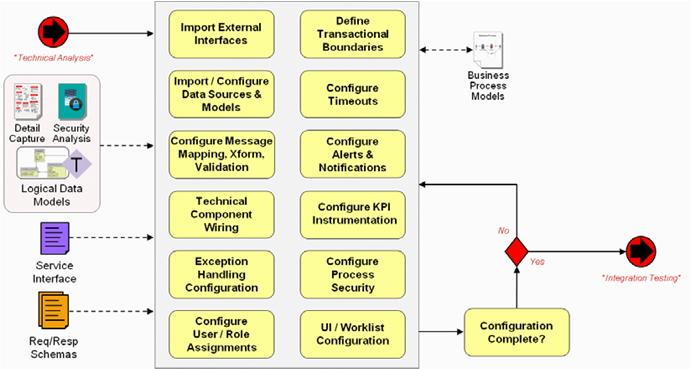
The resulting assembly of the business processes with application services integration, business rules, KPIs, worklist applications, etc. is now a composite business application ready for testing and other preparations prior to live operation.
The guidelines below are provided in the following sections:
During this task, for a BPM project the data that is being handled by the process is being designed, including:
In the case that an Analysis Data Model is available, the Data Design will be based on a mapping of the (conceptual) Analysis Data Model to the specific technology. The Analysis Data Model may also provide valuable input for determining the scope of data.
In many cases prototyping will have resulted in a pragmatic implementation, for which refactoring has to be done to comply with architectural requirements and design & build standards, keeping the process instance size as small as possible, and in order to effectively maintain the process. This refactoring is best done based upon an analysis that has been done up-front, facilitating optimizing the quality and minimizing the time needed to spend on refactoring.
In most cases, a proper Data Design is crucial for the performance and flexibility of a business process.
During this task, for a BPM project the behavior of the following “components” is determined:
When the technology support an OO way of designing classes with methods, performing a proper design of the behavior can greatly improve the maintainability and agility of the business process. Special attention then should be paid to assure that behavior is assigned to the proper classes, and can be tested effectively.
Other examples concern reusable mappings for XML data structures, for example to and from canonical data formats.
The design of business rules as is in scope of this activity, concerns the design of business rules as will be implemented using a rule engine.
No specific guidance for BPM. Please review the guidance provided in the task overview.
In the context of a BPM project, and this point of time, a “unit” corresponds with one or more activities of the Future Process Model (RD.011) that together form a logical unit of commit. Also all lower-level components that support that activity are considered to be units on their own in this context.
When business process modeling is combined with use case modeling, the Use Case Details (RA.024) for one use case provides the input for creating the initial unit testing scripts that covers the (interactive) activity or activities corresponding with that use case.
This task does not address the creation of automated unit testing scripts, as that is considered to be an integral part of the implementation tasks.
No specific guidance for BPM. Please review the guidance provided in the task overview.
Please review the supplemental guidelines for the task, Develop Unit Test Scripts (TE.020.1) above for details about unit testing in a BPM environment.
During Integration Testing, a white-box testing approach is used to ensure the technical integration between the process engine and the underlying application functions, information services, and various other external data and systems, performs appropriately.
After a successful iteration of composition and integration testing, the business process enters the state of implemented.
Unlike in the earlier sections of this BPM engineering view, the final stages of testing through commissioning/production do not deviate significantly from traditional software engineering; therefore, this section provides only a brief description of production readiness procedures while highlighting areas of particular interest to BPM.
The procedure for taking an application from development to a live production environment is commonly summarized under the heading of deployment. Deployment however, refers only to the part of the process in which the application is prepared for transfer from the development environment, in a complete, integrated package, and made ready for use in a run-time environment. Initial uses for the deployment package and associated run-time environments, include various levels of testing and approval prior to the ultimate production go-live. Numerous other activities are required along the way and the complete procedure for production readiness of a composite business application should include the following steps:
There are many variations on these basic software engineering themes, but the sequence is particularly important to maximize the effectiveness of testing and minimize rework when problems are discovered. For example, integration testing and system testing (also known as requirements testing) should not require a complete end-to-end working composite application and can, therefore, be completed before deployment preparation, eliminating the need to repeat deployment when problems are found in these testing steps. On the other hand, acceptance testing, which may include performance and load testing, requires a complete deployment to a near-as-possible production environment.
Testing clearly does not occur exclusively in a "testing phase", but this is where the majority of testing effort is focused and typically a QA team comes together to design and execute these tests.
More detailed descriptions of the various tests appear under the relevant sections below, but a summary of common test types relevant to BPM is listed in the table below :
| Area | Test Type |
|---|---|
Business Process Refinement |
Simulation - Simulate Business Process (RA.010) |
Business Process Application Composition |
Unit Testing - Perform Unit Test (TE.030.1) |
Integration Testing |
Integration Testing - Perform Unit Test (TE.030.2) and Perform Integration Test (TE.040) System (Requirements) Testing - Perform System Test (TE.070) Process Collaboration Testing - Perform Systems Integration Test (TE.100) User Interaction and Usability Testing - Currently Support Acceptance Test (TE.120.1) |
Approval |
User Acceptance Testing (UAT) - Support Acceptance Test (TE.120.2) Performance and Load/Stress Testing - Execute Performance Test (PT.100) |
Commissioning |
Operational Testing - Conduct Operational Testing (TA.120) Availability and Disaster Recovery (Business Continuity) Testing - Conduct Disaster Recovery Test (TA.140) |
It is important to note that the cost of testing, in terms of equipment, personnel, and coordination increases as we move through the list in the table above and, as with any software engineering project, it should not be necessary to apply every test in its entirety to every change. BPM by its nature is also particularly prone to change due to its strategy of continuous improvement and core objective of business agility so we need to determine the scope of a release, categorize changes, and assess a risk level for every type of change in order to apply testing efficiently.
Some of the key issues for business process engineering arise from the broader involvement of business participants and the ease with which major changes can be made using current BPM tools. Changes to business process flows can now, theoretically, be made by business process owners and process analysts without support from IT. However, IT must still ensure changes are not allowed to flow into production in an uncontrolled manner. This is largely a concern for BPM governance. Governance first requires a complete and consistent method for BPM engineering upon which to define its policies and procedures. So, although governance is beyond the scope for this view, this is an important part of the foundation for BPM governance.
Business process engineering raises a number of new governance questions that require us to assess the potential impact of changes, specify which roles should be permitted to make changes, and what testing and acceptance criteria should be applied.
One example of a BPM specific concern is testing of business rules: should we test and approve every business rule change or should we limit the scope of business rules to minimize the potential impact to a running system? Is it simply sufficient to test business rule changes in a simulation environment? In extreme cases there are modifications (refinements) that will trigger a software change: this is likely to trigger both traditional software testing and separately business process testing and approval. The first step in an approach to production readiness is to identify all the different types of changes that can arise in a BPM system. The question of roles and responsibilities can be deferred to the governance framework. The following list is a suggested starting point for categorization with some examples of changes with varying potential impact to a production system:
| Category | Example |
|---|---|
Roles |
|
Key Performance Indicators |
|
Business Rules |
|
Model and Business Process Flow |
|
Activities |
|
Events |
|
System Interfaces and Integration Techniques |
|
Underlying Application Code |
|
Other System Considerations |
|
Change in Business Conditions |
|
Considering the diversity of this by-no-means-complete list it is immediately clear that we not only need to form complex rules about how changes flow into production, but we also need a comprehensive impact analysis mechanism. Changes to business process could impact the operation of IT systems while changes in the IT applications and infrastructure could have significant up-stream effects on business processes (if they are not sufficiently decoupled). Some of the items in this list seem fairly innocuous, for example, "addition of end user participants" is unlikely to have much effect on the business process flow; however, increasing the number of participants (for example, rolling-out a pilot automation across the enterprise) is likely to increase the load on the BPM infrastructure and the underlying systems.
KPIs, on the other hand, have no bearing on the infrastructure or even the business processes itself. Instead changes to KPIs affect the measurement of the business process and so the impact to the analytics, particularly trend analysis and long-term performance measurements, must be considered carefully. KPIs may fall outside the scope of testing considered here, but the potential impact to existing analysis and reporting activities must be traceable. By using a categorization scheme of this type, a matrix can be developed specifying the level of testing required by every change type within a release. The following table shows a simple example of such a matrix using the testing types and some sample change candidates from the categories we have discussed here.
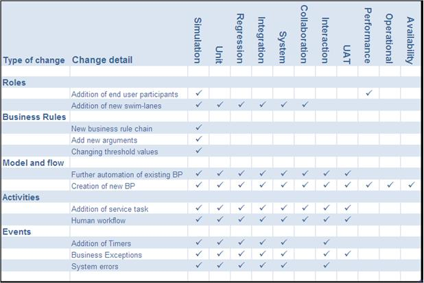
Another consideration unique to BPM is the introduction of long-running business processes to the IT environment. Some business processes span days or even weeks, but in traditional non-BPM environments IT maintenance schedules work around business user needs and these users manage the flow of the business process between systems outages. In a BPM system, business process states must be carefully maintained between outages, upgrades, and most interestingly between business process changes. In these cases a policy must be established to ensure consistent handling: should all long running processes be paused or altered to an end state before changes are applied, should prior versions of a business process be allowed to run to completion after a change, or should an “upgrade” process flow be necessary to transition in-flight processes from an earlier version? The answers to these questions will ultimately be unique to the organization, so the important thing is to consider them carefully in advance and develop well-communicated policies to ensure consistent handling of all eventualities.
Further guidelines on this area are grouped into the following sections:
Since a BPM system is fundamentally concerned with managing process flow between business process activities, both system and human, it necessarily involves significant integration with the systems and applications that provide the underlying functions.
These functional assets may be geographically dispersed and technologically disparate. Similarly the architectural strategies used to perform the integration may also involve multiple approaches. All the integration points arising from various combinations of applications, technologies, and geographies must be tested in the context of our composite business application before proceeding with the next steps of deployment packaging, acceptance testing, etc.
Integration testing in the context of BPM is required to test all the interfaces between the business process flow and all its touch-points. These touch-points include:
Each of these touch-points may use various integration technologies and architectural strategies, such as SOA, MoM, EAI, or proprietary mechanisms. These combinations must all be tested to ensure consistent operation in the final composite business application.
This type of integration testing is two-fold:
First, the (single) process is tested as an independent "unit" from a technical perspective. Normally the process is developed and tested while all services and other type of touch-points are stubbed. In OUM this is seen as a unit test of the process itself, and therefore a the unit testing tasks are relevant for this:
- TE.020.2 - Develop Unit Test Scripts
- TE.018.2 - Prepare Static Test Data
- TE.030.2 - Perform Unit Test
During the first unit test each individual activity that take part of the process, while during this second unit test, we unit test the process as a whole.
After this unit test of the process is successful, then you integrate the process with the actual services and other type of touch-points. Then you have to test that this integration was successful from a technical perspective. In OUM this is seen as the integration test, with the following tasks:
A best practice in integration testing is to create a separate "test plan" for each integration point. This includes interaction diagrams and test cases that covered the interactions. This approach isolates changes to backend systems, compartmentalizes the integration testing, and ultimately makes regression testing easier.
The Integration Test Plan should cover both the unit test of the process (TE.030.2), as well as the integration test (TE.040) with the actual services.
Here you develop the scripts to unit test the process as a unit. The (single) process should be tested as an independent "unit" from a technical perspective. Normally the process is developed and tested while all services and other type of touch-points are stubbed.
This task concerns the specification or setup of test data to be used in any of the test types of the BPM project, and here it concerns the unit test of the business process.
Here you execute the unit test scripts prepared during the task, Develop Unit Test Scripts (TE.020.2) to unit test the business process as a single unit.
Integration Test Scenarios concern the integration of the process with any “external” component it uses, typically concerning services or other (sub) processes.
In case of a service or (sub) process, the input for the integration test scenario is provided by the Service Definition (AN.085). This will also be the case for any other process that is being called as a service through a process interface.
This task concerns the specification or setup of test data to be used in any of the test types of the BPM project, and here it concerns the integration test of the process.
Here you execute the integration test scenarios prepared during Create Integration Test Scenarios (TE.035) to test the integrations between the business process and its external components.
No specific guidance for BPM. Please review the guidance provided in the task overview.
In the context of a BPM project, the notion of “system” corresponds with one particular process. The model of that process, that is, the Future Process Model (RD.011.5) provides the input for creating the initial system test scenario, or rather “process test scenario”, if you will.
A (reusable) sub-process in this context is considered to be a “systems” on its own, and requires a system test scenario that in principle can be executed outside of the context of the calling process.
This task concerns the specification or setup of test data to be used in any of the test types of the BPM project, and here it concerns the system test of the process.
No specific guidance for BPM. Please review the guidance provided in the task overview.
Finally, after all system tests for all processes were tested successfully, you will test the front-to-end testing of the complete business process. Process collaboration refers to the interaction, via message flows, between processes both within "pools" and choreographies between "pools". That is to ensure that the interaction between multiple business processes that execute within the same environment as well as those communicating between separate environments work as expected, on a functional level. This is also called "process orchestration testing" where the orchestration among multiple processes is tested.
The focus of collaboration testing is ensuring messages that flow between business processes are acceptable to all participants in all cases.
In OUM, this is seen as the systems integration test, where each process that should be integrated is seen as a separate system. The following tasks are relevant for this:
In practice you will see that separate processes are system tested independently. It may even be that some (sub)processes that are needed are developed by a different project, by a different team, or perhaps even in an different organization.
So after all these processes are individually system tested, then you have to ensure that the processes as a whole together work as required. You need to involve the required parties, and write a specific test plan for this type of test
No specific guidance for BPM. Please review the guidance provided in the task overview.
No specific guidance for BPM. Please review the guidance provided in the task overview.
This task concerns the specification or setup of test data to be used in any of the test types of the BPM project, and here it concerns the systems integration test of the process.
No specific guidance for BPM. Please review the guidance provided in the task overview.
User interaction is primarily concerned with the interaction between the BPM system and the end user i.e. human process participant. Other user interactions that may be tested at this stage include process monitoring and administration interfaces as well as KPI analysis when custom solutions have been developed. User interactions may be handled through a worklist manager or a simple web interface integrated with underlying applications.
No specific guidance for BPM. Please review the guidance provided in the task overview.
Deployment Planning involves:
The package includes operational procedures and end user documentation and training. The first target for the deployment package, prior to production deployment, is user acceptance and potentially, performance testing environments.
Once a complete deployment package has been transferred out of development it is said to be deployed, or at least, deployment ready.
Before proceeding to the various end-to-end tests and final go-live, the composite application must be prepared to be transferred efficiently and completely to real-world environments. The environments we refer to are ultimately live production platforms, but prior to go-live there are various testing environments needed to facilitate stakeholder approvals.
Deployment is comprised of the following activities:
| Activity | Description |
|---|---|
Release Planning |
Software release planning is usually represented by a document describing a policy for organizing the production of regular software releases. It describes an approach for iterative software releases including a versioning scheme, milestones, release frequency, supporting practices, and tools to be to be used. In the case of BPM the regularity of business process releases is unlikely to be as predictable as traditional software, however, some aspects still apply. Versioning, in particular, along with its associated practices and tooling, is critical to the BPM release process. |
Version Tracking |
A versioning scheme identifies what is running in the production and testing environments at any given time and supports problem analysis, migration, deprecation, and retirement. |
Document Dependencies |
A full description of the dependencies for the composite application being deployed is necessary to ensure the suitability of the target environment. For example, specific versions of underlying applications and a named list of associated services should be included. A full dependency description not only defines the operating environment, but also enables impact analysis when dependent systems are being considered for update, replacement, or retirement. |
Preparation for use by End Users |
User Documentation Training |
Packaging |
Packaging is a central concern for deployment. It identifies the constituent parts of a deployable composite along with the mechanisms for building, updating, and unpacking the package. |
Development and Documentation of Procedures |
Installation and activation of the package Installation reversal (in case of problems) |
Upgrade Procedures |
|
Deactivation and Decommissioning |
|
A key concern for BPM composite application deployment is cohesiveness of the packaging. Some BPM systems may have the technical capability to promote certain types of changes to a running environment (including production) while the system is fully operational without interruption to in-flight processes. These changes may include roles, business rules, KPI’s, and even the flow of a business process. Other systems may simply require the deployment package to be broken into separate parts (when deploying to disparate systems for example). Either case must be carefully managed.
When a new version of a business process is being provisioned migration procedures must be developed to specify how the transition should be handled. In the simplest case all in-flight process instances would be allowed to run to completion while all new instances run the new version: perhaps a time limit is determined for the retirement of the previous version and a process administrator is required to intervene to complete or re-run outstanding instances. The ability to concurrently run multiple versions in this way is, however, dependent upon the capabilities of the BPM system. Another consideration for process migration would be user training in cases where a change to a business process impacts the flow of human tasks or the system's interaction with human participants.
No specific guidance for BPM. Please review the guidance provided in the task overview.
During Approval, the QA team plans and manages the end user and performance testing. This step is commonly called user acceptance testing (UAT).
Approval simply means to get agreement to put the composite business application into a live production environment, which implicitly involves various forms of acceptance testing to verify its readiness. Various stakeholders have different concerns that result in different types of testing. Tests are categorized into functional and non-functional testing and the test types that commonly apply in business process engineering are as follows:
The performance and scalability testing is also called load testing or stress testing, however, it is important to note that this non-functional test at the approval stage is very different from any form of load testing that may have been performed in a design-time simulation tool. Design-time workload simulation typically attempts to predict the workload of non-system assets, for example, human workers, delivery trucks, milling machines, etc. At this final approval stage, with the benefit of a complete functional system, performance testing focuses on the ability of the system assets (i.e. processors, applications, rules engines, etc.) to operate at the workload levels predicted by the business requirements.
A SOA strategy underpinning the BPM architecture provides an isolation layer separating the BPM platform from the source systems that provide application data and functionality. This “loose coupling” can be exploited during testing to simulate application functions and avoid the need for a complete implementation of all enterprise applications for the purpose of functional testing. Non-functional testing, in particular performance testing, does require as-near-as-possible replication of all production platforms involved in the business process. Some simplification can be achieved by establishing the performance characteristics and load limitations of individual applications and systems and using the data to augment the business process simulation model. The practice of running test "streams" within a production environment incurs substantial risks and should be avoided.
No specific guidance for BPM. Please review the guidance provided in the task overview.
Once approved by QA, the composite business process application moves into commissioning/production. This is where the business process transitions into full production operation and hence, the state changes to operational. The process is no longer undergoing testing, but is live in production. This live production state may, at first, be limited to small set of end users (i.e., a pilot or limited production release) during which, aspects of the business process other than its technical implementation may be examined.
In software, as with any engineering practice (for example, building, industrial plant, etc.), commissioning is defined as the process of assuring that all systems and components are installed, tested, operated, and maintained according to the operational requirements from the business owner. Once again testing and assurance appear outside the scope of the core testing owned by the QA team. In this case testing is required to ensure that the operational procedures perform according to requirements.
At this point in time, there may also required with installation of additional hardware and infrastructure software based on sizing specifications from the architecture team. Operational procedures take the form of documents (“the ops manual”), scripts, and an operations management framework (tool suite) capable of incorporating new dashboards and operational information. The standard operational procedures relevant to a BPM system include the following:
Start / Stop - Procedure for cleanly starting and stopping process instances, queues, engines and hardware platforms for maintenance, upgrades, etc.
Escalation - Describes how to respond to problems that may arise, such as, stalled queues, system failures, etc.
Backup and Restore - Backup systems must ensure traditional consistency for business processes during data or system recovery.
Business Continuity Plans - Specifies how to recover business services spanning all forms or service disruption from minor hardware failures to full-scale disaster recovery.
The acceptable duration and other parameters (loss of data, business opportunities, etc.) for maintenance cycles, problem resolution, and disaster recovery should all be specified by Service Level Agreements (SLAs).
Here the operations team usually takes responsibility for the deployable software package and works with the process engineering team to execute installation and upgrade procedures. Typically these procedures are tested during the commissioning of the test systems which requires careful planning since the test systems are a prerequisite for testing.
Commissioning of the composite business application may also involve setting up support, such as, training for both end users and helpdesk personnel. Ultimately the purpose of commissioning is to create a secure and effective environment to enable the OA&M (Operations, Administration, and Management) team to maintain continuous operation of the business applications. The Administration and Management of OA&M is covered in the following section, Monitoring and Analysis.
No specific guidance for BPM. Please review the guidance provided in the task overview.
Monitoring and Analysis supports both Operational Administration and Management (OA&M) of the business process in the production environment and business process improvement. The analysis of data gathered from predefined Key Performance Indicators (KPIs) provides critical information to the business analyst to support continuous improvement and continue the engineering lifecycle by re-entering the refinement step.
The final state of the composite business process application, before re-starting the continuous improvement cycle is monitored.
Below, it is described what we should expect from business process monitoring and what we need to do to achieve those objectives. Although monitoring finds itself at the end of this cycle (the final section in this supplemental guide), it is important to recognize that there would be nothing to monitor without the earlier steps of establishing requirements for Key Performance Indicators (that we did during Process Discovery and Definition) and attaching them to the model (during Technical Analysis and Design).
Here we focus on what currently remains for an engineering team to do to ensure that monitoring (and analysis) provides the fullest benefits to the business community.
The mantra of today's BPM is "monitor, manage, and optimize" and key differences between BPM and traditional software engineering include the empowerment of business users and associated enablement of continuous improvement of the business processes. These benefits are achieved largely through monitoring providing both real-time visibility and data to support effective analysis.
The purpose and broad benefits of monitoring in BPM are summarized in the following list:
The intrinsic role of monitoring in BPM presents three major opportunities to improve support to the business which must be carefully considered when defining the method for business process engineering. These three opportunities are described in the following sections.
Business Process Administration is a category of operational management related to IT's OA&M, however, it requires specialist business knowledge and should be the responsibility under the business owner. For this reason in particular, the information should not be confused with system information (such as server resource utilization) and must be presented, along with the necessary controls, in an easy-to-use dashboard.
The key objective of process monitoring for administration is to monitor health of business processes and respond to alerts and exception conditions. The category of exceptions we are primarily concerned with here is unhandled business process exceptions in which the process flow has not accommodated particular business scenarios: this may be by design, leaving rare, complex circumstances to drop-out for human intervention, perhaps with the intention of providing further analysis of these situations before designing a computerized flow to handle them. The other category of exceptions, which must be separated from business exceptions, is system errors and exceptions. Examples of system exceptions include server resource exhaustion and software errors: these conditions should be intercepted by IT administration or else immediately escalated by the business process administrator. Business processes can be better managed during runtime when monitoring supports effective response to alert conditions. Common scenarios in this category are:
Business process exception monitoring enables the business users to proactively detect exceptions and initiate procedures to resolve issues. Administrators can also identify common exceptions, such as, a repeated ordering mistake with particular supplier, and may respond by pausing the affected processes until resolution is reached.
In addition to defining approach for responding to alerts, the business process engineering method should also identify the need for escalation procedures. The role associated with process administration, in addition to handling a variety of situations, must also be responsible for triage of issues to other support organizations, such as, unhandled business process conditions to customer support or system exceptions to the IT helpdesk.
Another opportunity for monitoring within business process administration should enable the BPM system to dynamically change the behavior of a business process instance, thereby providing an automated response under carefully predefined circumstances. An automated response requires the system to modify the execution of a process instance based on real-time, higher-level analysis, potentially combining other Business Intelligence (BI) gleaned through Business Activity Monitoring (BAM) and/or Complex Event Processing (CEP). This approach may be the ultimate resolution to the rare, complex cases where the process flow drops-out to the administrator via an unhandled business exception because the information necessary to complete the flow is not directly available to the BPM system or the process model designers. An example automated response to an unhandled exception might be an alternative handling of credit card transaction risk assessment when the in-house credit card validation system is unavailable.
Modifying process flow at runtime provides greater agility in the business process by enabling the business users to dynamically change process behavior without redeploying the process. Also, business rules are used to decouple decisions from process flow while BAM allows users to modify rules based on real-time analysis of broader business events and influences.
In the case of business process administration, the method must make provisions for both detecting and reporting these conditions as well as specifying the administrative role that responds to them. The associated administrative duties require access and authority to make appropriate runtime changes to individual process instances.
This second category aggregates and analyzes data from KPI collectors to monitor the performance of business processes (rather than individual process instances) to identify optimization opportunities. Data collected through monitoring and its off-line analysis supports the following activities:
This category of activities supported by monitoring is concerned with analysis of as-is business processes running under BPM and associated incremental improvements. This is distinct from major process change (see next category) and commonly the responsibility of the Process Owner. Again, the method must provide for extraction of the necessary data and the chain of activities that deliver it in a usable form to the Process Owner, while also empowering that user to make process improvements.
EPM is a topic that is beyond the scope of business process engineering (although some may group it with Business Process Management); however, it is important that a business process engineering method recognizes and accommodates this valuable category of data collection and its preliminary analysis, required to support major process change. This case requires executive level authority and design, commonly involving Business Activity Monitoring and other Business Intelligence techniques, in which analytical data from BPM is just one source input.
The collection and analysis of business process performance information may be much the same as described earlier, but its target users and their analysis (and associated tooling) are quite different.
The process engineering method in this case, having little to do with the use of the data, must merely ensure that the appropriate data to support this activity is collected and transmitted accordingly. This is fundamentally a case of collecting requirements from executive level management and ensuring that corresponding indicators are applied to the executable process model.
As we have already stated, the primary enabler for business process monitoring, establishing KPI’s, has already been covered in earlier steps in this method. Also, much of what is done with the intelligence provided by the monitoring system is beyond the scope of an engineering method, while the challenge of providing it is largely an architectural concern. All that remains for a business process engineering effort at this stage is to identify the roles and their responsibilities to ensure effective implementation of monitoring technologies and ongoing analysis and application of the data it produces.
The participant roles along with their concerns and associated activities are summarized below:
Executive Business Leadership
Business / Enterprise Performance Management Process Owners
IT Operations
No specific guidance for BPM. Please review the guidance provided in the task overview.

Copyright © 2006, 2016, Oracle and/or its affiliates. All rights reserved.